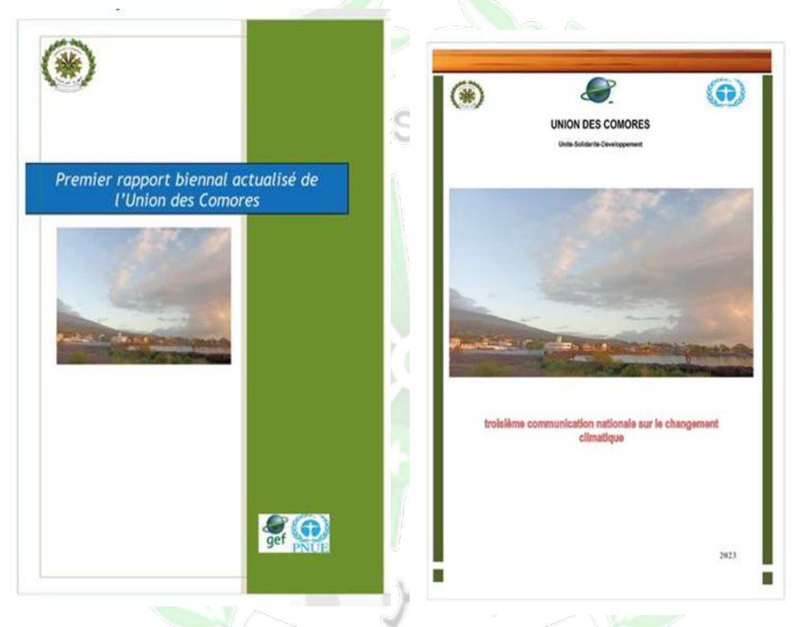
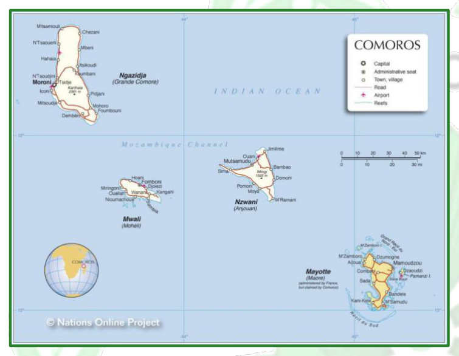
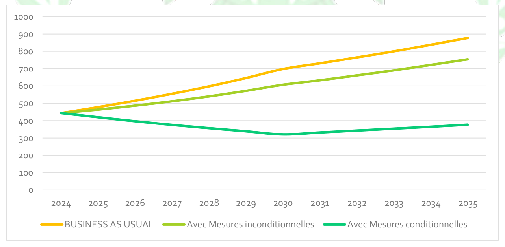
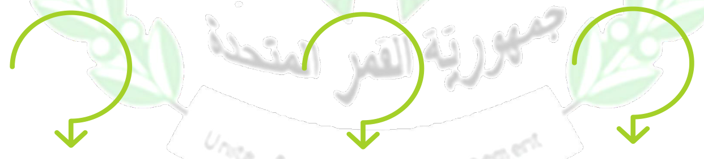
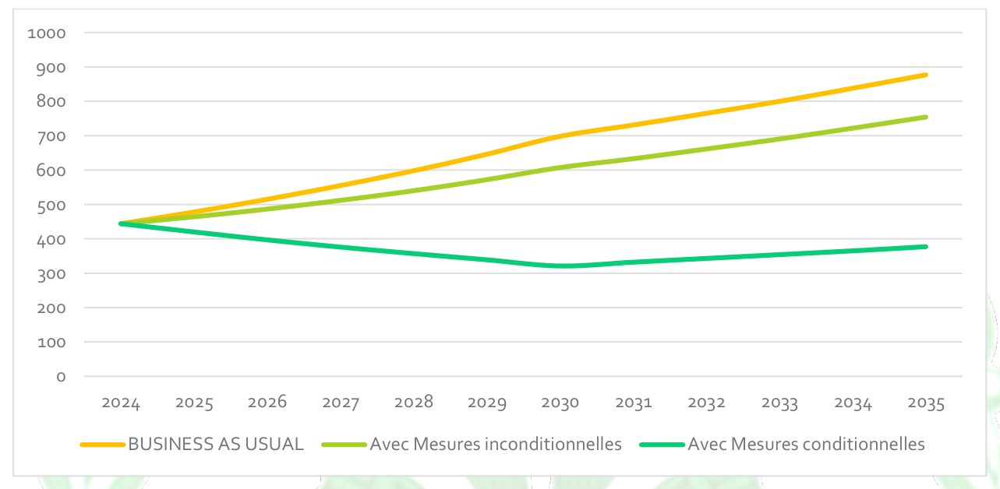
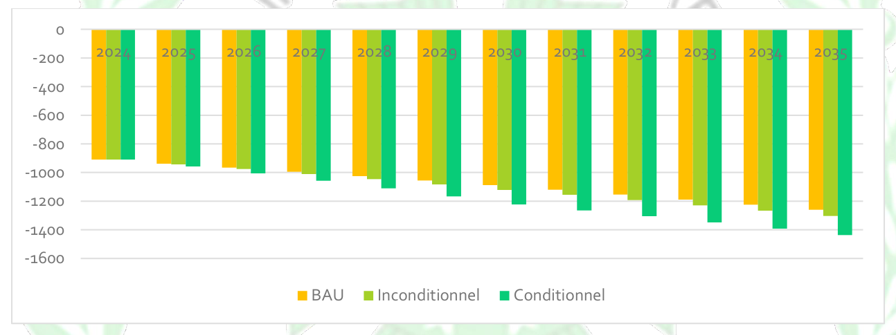
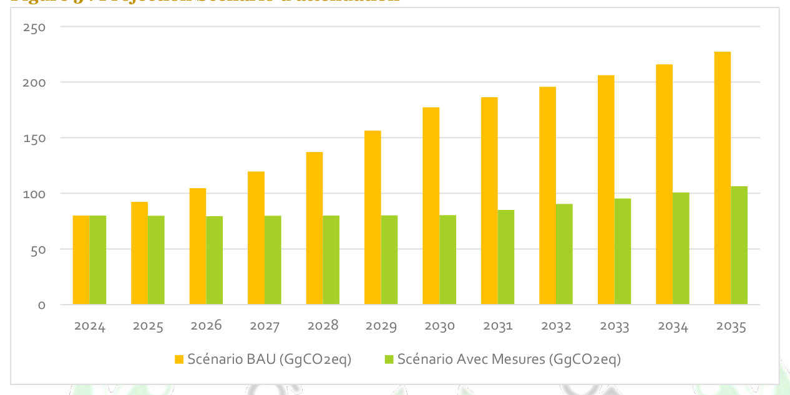
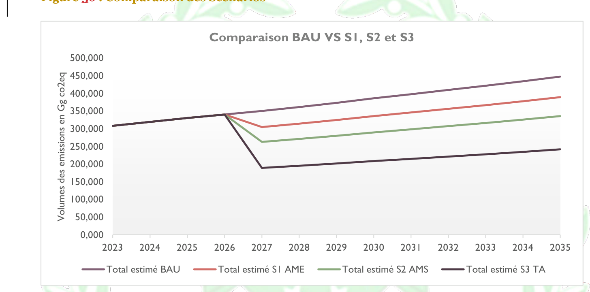
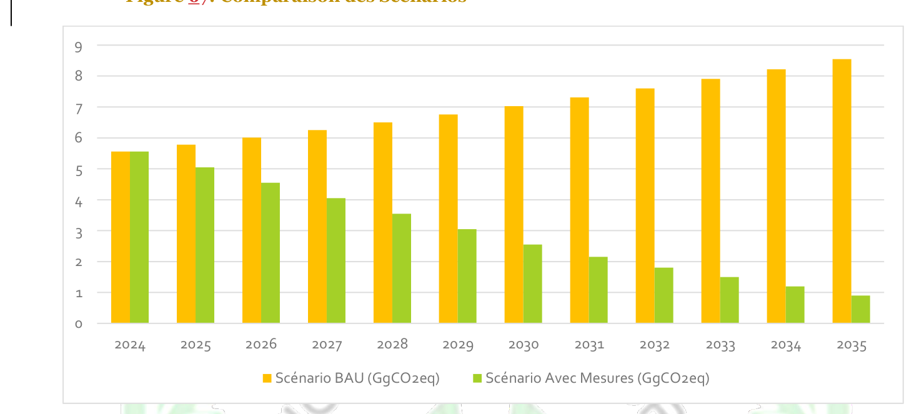
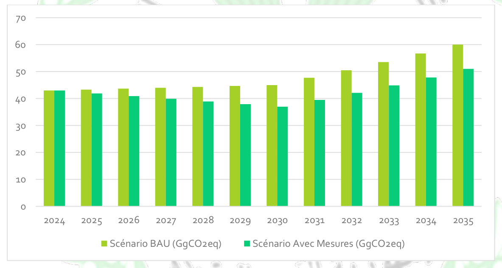

Union of the Comoros
March 2026
|
AFAT |
Agriculture, forestry and land use Protected Areas Agency |
|
BAU |
Business As Usual (baseline scenario) |
|
BTR |
Biennial Transparency Report |
|
CCNUCC |
United Nations Framework Convention on Climate Change |
|
CON |
Nationally determined contributions General Commission for Gender |
|
COP |
Conference of the Parties |
|
CO2-eq |
CO2 equivalent |
|
DNSAE |
National Directorate of Agricultural and Livestock Strategies Directorate of Equipment and Land-Use Planning. |
|
FAO |
Food and Agriculture Organization of the United Nations |
|
FEM |
Global Environment Facility |
|
GES |
Greenhouse Gases |
|
Gg CO2 eq |
Gigagram of CO2 equivalent |
|
GIEC |
Intergovernmental Panel on Climate Change |
|
INRAPE |
National Institute for Research in Agriculture, Fisheries and the Environment |
|
ITMOs |
Internationally Transferred Mitigation Outcomes |
|
KWh |
Kilowatt-hours |
|
MNV |
Measurement, Reporting and Verification |
|
ODD |
Sustainable Development Goals |
|
PANA |
National Adaptation Programme of Action on climate change |
|
PIED |
Small Island Developing State |
|
PIUP |
Industrial processes and product use |
|
PNUD |
United Nations Development Programme |
|
UTCF |
Land use, land-use change and forestry |
|
UCAEP |
Union of Chambers of Agriculture, Livestock and Fisheries. |
|
PAT |
Technology Action Plan |
|
CH4 |
Methane |
|
CO |
Carbon Monoxide |
|
CO2 |
Carbon Dioxide |
|
NOx |
Nitrogen oxide |
|
SF6 |
Sulphur hexafluoride |
|
SO2 |
Sulphur dioxide |
|
CFC |
Chlorofluorocarbons |
|
HCFC |
Hydrochlorofluorocarbon |
|
COVNM |
Non-Methane Volatile Organic Compound |
|
N20 |
Nitrous Oxide |
National steering entity
Nations Development Programme (PNUD);
International Labour Organization (OIT)
Drafting support structures
Climate change represents one of the most pressing challenges facing humanity, and the Union of the Comoros is no exception. This phenomenon, marked by global warming, is already causing worrying impacts that threaten our populations, our ecosystems and our infrastructure. As an island developing State, our country is disproportionately exposed to these climate risks, notably sea-level rise, coastal erosion, agricultural disruption and increased rainfall variability.
In accordance with the Paris Agreement, to which the Union of the Comoros has been a party since 2016, our country reaffirms its commitment to contribute to the global effort to reduce greenhouse gas emissions and to strengthen its climate resilience. The Nationally Determined Contribution (NDC 3.0) reflects this renewed ambition, integrating all national mitigation and adaptation priorities for the period up to 2035, with a long-term vision consistent with the Emerging Comoros Plan.
NDC 3.0 places emphasis on reducing GHG emissions through targeted actions in key sectors such as energy, transport, waste, agriculture and forestry, while integrating a progressive transition to clean energy and improved energy efficiency. On the adaptation side, it strengthens actions to increase community resilience to climate shocks, notably in the areas of agriculture, water management, health, infrastructure, ecosystems and disaster risk reduction.

Minister of the Environment in charge of Tourism
The social dimension also occupies an important place in this NDC 3.0. It integrates equity, the inclusion of women and young people, and the protection of vulnerable groups, in order to ensure that the climate transition benefits the entire Comorian population. The promotion of green employment, sustainable development and innovation constitutes an essential lever to support this momentum.
This document is aligned with our national and international commitments, including the 2030 Agenda and the Sustainable Development Goals. It constitutes an essential strategic framework to guide the country's climate actions, mobilise technical and financial partners, and strengthen regional and international cooperation.
We extend our sincere thanks to all the institutional, technical and financial partners who contributed to the preparation of this NDC 3.0, as well as to the national experts and local community actors who actively participated in the consultations. Their commitment was decisive in producing this document. The Union of the Comoros remains resolutely committed to acting for the climate, for the well-being of its population and for a sustainable and resilient future.
The Union of the Comoros, a Small Island Developing State (SIDS) located in the Indian Ocean, is suffering the full force of the impacts of climate change, which threaten its ecosystems and its socio-economic development. Aligned with the Paris Agreement and the Emerging Comoros Plan 2030, this Third Nationally Determined Contribution (NDC 3.0) marks a significant strengthening of the country's climate ambition, aiming to reconcile resilience, a just transition and low-carbon growth.
Although its historical emissions are negligible, the Comoros commits to a deep decarbonisation of its economy. The overall objective is to reduce greenhouse gas (GHG) emissions by 57 % by 2035 compared with the business-as-usual scenario (BAU).
This strategy rests on a major energy transition (geothermal, solar), sustainable mobility and, above all, the strengthening of the forestry and land-use sector (UTCF). Through conservation and reforestation, the Comoros aims not only to achieve carbon neutrality, but to remain a net carbon sink for the planet, with a targeted net sequestration of -1 437 Gg CO2eq in 2035.
Adaptation remains the absolute priority to protect the population and infrastructure. The national strategy focuses on five interdependent pillars:
1. Water and Water Management: Securing access to drinking water and integrated watershed management.
2. Agriculture and Food Security: Promotion of climate-smart and resilient agriculture.
3. Coastal Zones and Marine Ecosystems: Protection of the coastline, restoration of mangroves and sustainable fisheries in the face of sea-level rise.
4. Infrastructure and Housing: Strengthening the resilience of buildings and adapted urban planning.
5. Health and Well-being: Combating climate-sensitive diseases and strengthening the health system.
The implementation of this NDC 3.0 requires a massive mobilisation of resources. The total cost of the necessary investments is estimated at approximately several hundred million, around 600 million dollars by 2035. The success of this plan will depend on technology transfer, capacity building and robust international financial support, while integrating an inclusive approach sensitive to gender and vulnerable groups.
The Union of Comoros, a Small Island Developing State (SIDS) in the Indian Ocean, faces critical vulnerabilities to climate change impacts that threaten its ecosystems and socio-economic development. Aligned with the Paris Agreement and the Plan Comores Emergent 2030, this Third Nationally Determined Contribution (NDC 3.0) represents a significant enhancement of the country's climate ambition, aiming to align resilience, a just transition, and low-carbon growth.
Despite negligible historical emissions, Comoros commits to a deep decarbonization of its economy. The overall target is to reduce Greenhouse Gas (GHG) emissions by 57% by 2035 compared to the Business As Usual (BAU) scenario.
This strategy relies on a major energy transition (geothermal, solar), sustainable mobility, and crucially, the Land Use, Land-Use Change, and Forestry (LULUCF) sector. Through conservation and reforestation, Comoros aims not only to achieve carbon neutrality but to remain a net carbon sink for the planet, targeting a net sequestration of -1,437 Gg CO2eq by 2035.
Adaptation remains the absolute priority to protect the population and infrastructure. The national strategy focuses on f ive interdependent pillars:
1. Water and Water Management : Securing access to drinking water and integrated watershed management.
2. Agriculture and Food Security : Promoting climate-smart and resilient agriculture.
3. Coastal Zones and Marine Ecosystems: Protecting coastlines, restoring mangroves, and sustainable f isheries in the face of sea-level rise.
4. Infrastructure and Habitat : Strengthening building resilience and adaptive urban planning.
5. Health and Well-being: Combating climate-sensitive diseases and strengthening the health system.
Implementing this NDC 3.0 requires substantial resource mobilization. The total investment needed is estimated at approximately several hundred million around 600 million USD by 2035. The success of this plan depends on technology transfer, capacity building, and robust international financial support, while integrating an inclusive approach sensitive to gender and vulnerable groups.
The Union of the Comoros, an island developing State located in the Indian Ocean, is particularly vulnerable to the effects of climate change. Made up of four main islands, Grande Comores, Anjouan, Mohéli and Mayotte, which has remained under French administration, the country is exposed to growing risks such as sea-level rise, coastal erosion, floods, temperature increases, droughts, tropical cyclones and biodiversity loss. These phenomena directly threaten food security, access to drinking water, public health, infrastructure and the livelihoods of populations, in particular those living in rural and coastal areas.
Aware of these challenges, the Union of the Comoros has developed its Third Nationally Determined Contribution (NDC 3.0), which represents a major step forward compared with previous versions. This revision strengthens national mitigation and adaptation commitments, aligning them more closely with the Paris Agreement, the 2030 SDG agenda and the African Union's Agenda 2063. It reflects the country's determination to reconcile energy transition, climate resilience and economic growth, despite limited capacities and persistent socio-economic constraints.
In terms of mitigation, NDC 3.0 provides for an unconditional reduction of 14 % in greenhouse gas emissions by 20351 and a conditional reduction of 43 %2 thanks to international support. These ambitions rely on the development of renewable energies, energy efficiency, the promotion of clean transport and the sustainable management of natural resources, contributing to the construction of a low-carbon energy model.
Adaptation constitutes a central axis of the national strategy. The priorities identified concern resilient agriculture and food security, integrated water resources management and sustainable access to drinking water, the protection of coastal and marine areas, the restoration of mangroves and the sustainable use of fisheries resources, the strengthening of public health in the face of climate risks, as well as the preservation of biodiversity and the restoration of forest ecosystems. These measures aim to reduce the vulnerability of populations and ensure the sustainability of ecosystems, while supporting livelihoods and local economic development. NDC 3.0 also promotes inclusive insurance and climate risk financing as an essential tool to strengthen the resilience of populations and support recovery after disasters.
The implementation of NDC 3.0 requires investments estimated at approximately 6,6 billion USD3 by 2030, which can be mobilised through international cooperation, technology transfer and capacity building. The success of this approach rests on an inclusive and participatory approach, involving public institutions, civil society, the private sector, local authorities and technical and financial partners, in order to guarantee a climate response that is equitable and adapted to national realities.
Beyond 2030, NDC 3.0 embodies the strategic vision of the Union of the Comoros: to build a country that is resilient to climate change, protect its populations and its ecosystems, promote a sustainable and inclusive energy transition, and actively contribute to global efforts to combat climate change by reconciling adaptation, mitigation and sustainable development.
The question of the carbon market in the Comoros is taking on a growing place in the national climate strategy, but today it relies more on the potential of natural sinks (notably lands and mangroves) than on a structured domestic market. The 3rd NDC and the national inventories show that, in the scenarios adopted, the Union of the Comoros can present a strongly negative net balance (net sink) by 2030 as a result of actions in the AFAT sector and mangrove restoration, which opens opportunities for carbon credits based on removals (blue carbon, reforestation, sustainable agricultural practices). The BUR1 and the inventories nevertheless highlight gaps in MRV (measurement, monitoring and verification), baseline and institutional architecture, which are prerequisites for generating credible credits and participating transparently in international markets (Article 6). In the short term, the priorities are therefore: (i) strengthen inventories and MRV capacities; to this end, a roadmap was drawn up in 2020 for the establishment of a national MRV system, (ii) define a national governance and benefit-sharing framework for credits (safeguards, transparency, inclusion of local communities), and (iii) target mechanisms compatible with the long-term vision (credits for coastal / mangrove restoration, carbon conservation, and renewable energy projects) in order to attract financial support and technology transfer. If well exploited and regulated, the valorisation of the climate service of ecosystems could become a complementary source of financing for adaptation and resilience, provided that strict social and environmental safeguards are ensured and that any approach is placed within the mitigation and adaptation trajectory defined by the 3rd NDC.
The Union of the Comoros ratified the United Nations Framework Convention on Climate Change (UNFCCC) on 31 October 1994 as a non-Annex 1 party, the Kyoto Protocol on 10 April 2008, and the Paris Agreement on 23 November 2016. In so doing, the Comoros affirmed its commitment to the global programme with a view to achieving the objective of Article 2, paragraphs 1(a) and 1(b) of the PA.
| Article 2, paragraphs 1 a) and 1 b) of the Paris Agreement
The Comoros submitted its intended nationally determined contribution (INDC) in 2015.
The Paris Agreement (Article 4, paragraph 2) requires each Party to prepare, communicate and maintain successive nationally determined contributions (NDCs) that it intends to achieve.
Thus, in accordance with decisions 1/CP.19 and 1/CP.20 and with its Emerging Comoros Plan 2030, the Comoros revised its INDC to produce its NDC 2.0 in 2021, and communicates through this document its Third Nationally Determined Contribution (NDC 3.O) in order to express its commitment and its contribution to the fight against climate change.
The elements included in the Nationally Determined Contribution of the Comoros are the synthesis of the ambitions and public policies of the country which, at the moment of making a turning point in its development, is choosing to commit resolutely to sustainable development based on a low rate of greenhouse gas (GHG) emissions. The country thus wishes to contribute to international efforts to combat global warming by pursuing the objective of being a carbon sink by 2030.
The country has also prepared and submitted its Third National Communication on climate change in 2023, a biennial update report (BUR) in 2023, and is preparing its first biennial transparency report (BTR1) to inform the Convention of its emissions, the progress made in implementing mitigation and adaptation, and the support received and needed.


Located at the northern entrance of the Mozambique Channel between 11°20' and 13°14' South latitude and 43°11' and 45°19' East longitude, approximately 300Km between the East coast of Africa and Madagascar, the Union of the Comoros, a Small Island Developing State, is an archipelago made up of four islands of volcanic origin (Ngazidja, Mwali, Ndzouani and Maoré) with a surface area of 2236Km2. A total coastline length of 340 km. The highest peak in the country (Karthala) is at an altitude of 2.361 metres.

Located within one of the world's 25 biodiversity hotspots, the country presents a diversity of natural landscapes and a wealth of ecosystem, faunal and floral biodiversity, with coastal ecosystems ranked among the 43 priority marine regions of the planet.
Geographical map of the Comoros
Source: Geographical Division of the Archives Directorate of the Ministry of Foreign Affairs, Francophonie and the Arab World, 2012
The resident population counted during the last census in 2017 is 758 316 inhabitants4, of whom 50 % reside in Ngazidja, 43,2 % in Ndzuwani and 6,8 % in Mwali. The population is estimated at 909529 in 2025 according to the summary of demographic projections for the Comoros from the RGPH 2017. With approximately 466 inhabitants per km², it is also one of the most densely populated countries on the planet. Only a relatively small share of the population (30 %) lives in urban areas. The total resident population is therefore predominantly rural (69,0 %) and young (53,8 % of people are under 20 years of age).
The Comorian economy is poorly diversified and is focused essentially on the primary sector. Indeed, the latter, made up of agriculture and fisheries, still represents a significant and growing share of the GDP of the Comoros, which highlights the potential for future structural transformation. The primary sector contributed 36,4% of GDP in 2022, compared with approximately 30% in 2010. This progression results mainly from an increase in the contribution of the fisheries sector, which rose from 7,3% of GDP in 2010 to 13,1% in 2022. In parallel, the agricultural sector rebounded, with growth of 3% over the period 2021-2022, compared with -0,4% between 2016 and 20195. Thus, GDP increased by 1,9 % in 2021 compared with 0,2 % in 2020.
The primary sector provides 57 % of total employment, of which 62,7 % is held by women, and 90 % of operating revenue.
Furthermore, the economy relies heavily on consumption, driven by remittances from the diaspora, and lacks diversity, with the private sector being small and essentially informal, contributing very little to value added. Foreign grants have only worsened the lack of incentives to invest in human capital and the investment stock. Unemployment rates are relatively high, especially among young people. Poverty is a real challenge: according to estimates, 39% of the population lived below the poverty line in 2022. This situation is aggravated by high inflation rates, peaking at 12,4% in 2022 before falling back to 9,2% in 2023 and then to 2,2 percent in 2024.
With a gross national income per capita of $1360, the Union of the Comoros has just been classified among lower-middle-income countries. The ambition is to move into the upper tier at more than $4000 per capita by 2030, drawing on the practices and successful models of other emerging countries to put the Union of the Comoros on the path of economic expansion, break with cycles of weak and volatile growth and create a growth momentum expected to reach an average of more than 7,5 % in 20306.
The climate of the Comoros is determined by the tropical maritime influence of the Indian Ocean and the south-east trade winds. Its geographical location, north-west of Madagascar, gives it a largely tropical climate, with small seasonal variations in temperature. However, the altitude of some parts of the islands, particularly on the main island of Grande Comore (Ngazidja), considerably influences the regional microclimate.
Two seasons mark the year: the hot and humid rainy season, from November to April, and the cooler dry season, from May to October. During the rainy season, temperatures often reach 31 °C and are accompanied by heavy rains. During the dry season, temperatures drop slightly and average between 23 and 27 °C. The trade winds moderate the heat and ensure a thermal balance. In particular, the western coasts of the islands, exposed to the winds, are drier than the eastern coasts, exposed to the humid trade winds. Each of the islands of the archipelago has its own climatic characteristics:
On Grande Comore, the Karthala volcano determines the climate. At altitude, from about 800 m upwards, rainfall is more frequent and temperatures cooler, with daily averages of 18 to 22 °C. In contrast, the coastal regions are significantly warmer, with daily temperatures between 25 and 30 °C and high humidity.
Anjouan has a rugged topography with densely vegetated ridges. Humidity there is constantly high and up to 2 000 mm of rain falls per year. The rainy season extends from November to April. The climate is cooler in the mountains of Anjouan than in the flat coastal areas.
Mohéli is the smallest of the three main islands and has a more uniform climate profile, with a distribution of temperatures and rainfall similar to that of Anjouan, but with a tendency towards lower extreme values due to its lower relief.
The Union of the Comoros is particularly vulnerable to climate risks. According to the Notre Dame Global Adaptation Index, the Comoros is the 29th most vulnerable country to climate change and ranks 163rd in terms of adaptation readiness, out of 191 countries assessed.
The archipelago is exposed to numerous natural disasters that severely affect natural capital, the population and physical infrastructure. Between 2018 and 2023, the country experienced 11 tropical depressions or cyclones, with Cyclone Kenneth causing the heaviest damage. This damage represented 14% of GDP, leading to a fall in economic growth from 3,6% in 2018 to 1,9% in 2019. More than 345 000 people, or 40% of the population, were affected by the cyclone, of whom 185 000 were severely affected and 12 0007 displaced. Despite these challenges, the Comoros has significant opportunities to strengthen its resilience to climate crises.
The main areas of intervention for the Comoros in the face of climate change are adaptation and resilient development, as the country faces additional costs of 836 million USD8 by 2050 due to climate impacts. The development of an adaptation plan would make it possible to improve water management, strengthen coastal protection and develop climate-smart agricultural practices, and to strengthen the adaptive capacity of sectors linked to natural resources. In addition, it will be essential to implement strategic economic diversification in order to limit future climate impacts, for low-carbon development.
Thus, development activities will be carried out in such a way as to generate co-benefits
2.6 Development Priority of the Union of the Comoros THE EMERGING COMOROS PLAN 2030 sets out the government's NEW DEVELOPMENT AMBITION of bringing the Union of the Comoros into the ranks of emerging countries by 2030. To this end, the country wishes to engage in a process of profound reforms at all levels to trigger the structural changes conducive to emergence. This vision rests on the pillars below
Foundation 1: Tourism And Handicrafts, Major Assets For The Comoros In The Indian Ocean
Foundation 2: Promoting The Structural Transformation Of The Blue Economy Of The Comoros To Revive The Economy
Foundation 3: The Comoros, A Hub For Financial And Logistics Services In The Indian Ocean
Foundation 4: A Modernised Agriculture
Foundation 5: Industrial Niches To Diversify The Economy
Catalyst 1: A Reformed And More Stable Political And Institutional Framework
Catalyst 2: Upgraded Infrastructure For A High-Performing Economy
Catalyst 3: Human Capital That Prepares For The Future
Catalyst 4: Structural Reforms For A Competitive And Conducive Environment
Catalyst 5: The Comoros, An Actor In The Digital Revolution
The greenhouse gas inventory for the AFOLU sector in the Comoros over the period 2010-2024 highlights a particularly favourable dynamic, with a net carbon sink that more than doubled in fifteen years, reaching about -910 Gg CO2eq in 2024. This exceptional performance is the result of still-extensive land management, positive land conversion, and the maintenance of natural sinks such as forests, grasslands and wetlands.
Emissions from livestock, manure management and urea use remain limited, in the absence of notable intensification of the agricultural sector. However, this favourable situation could change with demographic pressure, the expansion of settlements and agricultural changes. It is therefore crucial to institutionalise monitoring, strengthen methodological transparency, and preserve key ecosystems, in order to guarantee in the long term the strategic role of the AFOLU sector in climate change mitigation in the Comoros.
Total emissions from the energy sector rose from about 133 Gg CO2eq in 2010 to 320 Gg CO2eq in 2024, an increase of more than 140 % in fifteen years. This increase reflects the growing dependence of the Comorian economy on fossil fuels, particularly in the sectors of electricity generation, road transport, fishing and residential. A major peak was recorded in 2022, reaching about 322 Gg CO2eq, followed by a decrease in 2023 to 308 Gg CO2eq, before a slight recovery in 2024. This dynamic is largely influenced by the effects of the COVID-19 pandemic, marked by a significant reduction in economic activities in 2020, then by a rapid recovery between 2021 and 2022.
|
Years |
Total emissions (Gg CO₂eq) |
|
2010 |
132,71 |
|
2011 |
149,67 |
|
2012 |
168,41 |
|
2013 |
174,28 |
|
2014 |
199,65 |
|
2015 |
217,95 |
|
2016 |
232,77 |
|
2017 |
251,4 |
|
2018 |
266,74 |
|
2019 |
272,32 |
|
2020 |
277,02 |
|
2021 |
298,33 |
|
2022 |
322,49 |
|
2023 |
308,45 |
|
2024 |
319,5 |
Total emissions from the waste sector in the Comoros are estimated at about 30,5 Gg CO 2eq in 2010 and reach nearly 42,1 Gg CO2eq in 2024, an increase of about 38 % over the period. This moderate but steady trend is part of the broader context of the country's demographic, economic and institutional dynamics.
Several factors explain this trend:
- National population growth
- Continuation of traditional management practices
- Absence of alternative treatment or recovery systems
- Lack of infrastructure and planning
|
Years |
Total emissions (Gg CO₂eq) |
|
2010 |
30,4649 |
|
2011 |
31,0239 |
|
2012 |
31,6528 |
|
2013 |
32,3300 |
|
2014 |
33,0396 |
|
2015 |
33,7437 |
|
2016 |
34,4424 |
|
2017 |
35,1358 |
|
2018 |
35,8292 |
|
2019 |
36,5278 |
|
2020 |
37,2482 |
|
2021 |
37,9951 |
|
2022 |
38,3166 |
|
2023 |
39,4894 |
|
2024 |
42,1177 |
Emissions from the IPPU sector increased sharply over the period 2010-2024, rising from 6,62993 Gg CO2eq in 2019 to 17,97792 Gg CO,eq in 2022. This increase is mainly explained by the accumulation of imports of lubricants and paraffin recorded at customs during the COVID-19 period, coinciding with the resumption of socio-economic activities, relative to a decline in commercial activities during the pandemic
|
Years |
Total GHG emissions |
|
2010 |
4,11797 |
|
2011 |
4,76261 |
|
2012 |
4, 50934 |
|
2013 |
4, 63752 |
|
2014 |
6,22553 |
|
2015 |
10, 75842 |
|
2016 |
8, 03473 |
|
2017 |
7, 05921 |
|
2018 |
6, 69942 |
|
2019 |
6,62993 |
|
2020 |
6, 91296 |
|
2021 |
6, 52291 |
|
2022 |
17,97792 |
|
2023 |
9, 76631 |
|
2024 |
5,56262 |
The comparative analysis of greenhouse gas (GHG) emission projections over the period 2024-2035 highlights the transformative ambition of the Nationally Determined Contribution (NDC) of the Comoros. The trends table illustrates a clear break between the baseline scenario ("Business as Usual" - BAU), marked by continuous growth in emissions, and the mitigation scenario ("With Measures"), which commits the country to a resilient low-carbon development pathway.

|
Emissions in Gg CO2eq) |
2024 |
2025 |
2026 |
2027 |
2028 |
2029 |
2030 |
2031 |
2032 |
2033 |
2034 |
2035 |
|
BUSINESS AS USUAL |
444 |
478 |
515 |
555 |
598 |
646 |
698 |
731 |
765 |
800 |
838 |
877 |
|
With unconditional measures |
444 |
464 |
487 |
512 |
540 |
572 |
607 |
633 |
661 |
690 |
722 |
754 |
|
With conditional measures |
444 |
420 |
397 |
376 |
357 |
339 |
321 |
332 |
343 |
354 |
365 |
377 |
The strategy of the Comoros unfolds in two key stages, consolidating the country's commitment to reversing its emissions curve despite development imperatives
2030 horizon: At this intermediate stage, the Comoros aims for an overall reduction in GHG emissions of 54% compared with the baseline scenario. This target breaks down into an unconditional contribution of 13%, financed by national resources, and a conditional contribution of 41%, dependent on international support.
2035 horizon: The effort intensifies to achieve a 57% reduction in emissions (i.e. avoiding about 499,68 GgCO2eq compared with BAU). At this horizon, the unconditional share rises to 14%, while the conditional share reaches 43%
|
GHG emissions: Gg CO2eq |
2024 |
2025 |
2026 |
2027 |
2028 |
2029 |
2030 |
2031 |
2032 |
2033 |
2034 |
2035 |
|
|
BUSINESS AS USUAL |
1. Energy |
320 |
342 |
365 |
390 |
416 |
445 |
475 |
496 |
517 |
539 |
563 |
587 |
|
2. IPPU |
6 |
6 |
6 |
6 |
7 |
7 |
7 |
7 |
8 |
8 |
8 |
9 |
|
|
3. Agriculture |
80 |
92 |
105 |
120 |
137 |
156 |
177 |
186 |
196 |
206 |
216 |
227 |
|
|
4. LULUCF (Net Sink) |
-910 |
-938 |
-966 |
-995 |
-1025 |
-1056 |
-1087 |
-1120 |
-1154 |
-1189 |
-1224 |
-1260 |
|
|
5. Waste |
43 |
43 |
44 |
44 |
44 |
45 |
45 |
48 |
50 |
53 |
57 |
60 |
|
|
Total (including LULUCF) |
-466 |
-460 |
-452 |
-441 |
-427 |
-410 |
-389 |
-389 |
-390 |
-389 |
-387 |
-383 |
|
|
Total (excluding LULUCF) |
444 |
478 |
515 |
555 |
598 |
646 |
698 |
731 |
765 |
800 |
838 |
877 |
|
|
WITH MEASURES |
1. Energy |
320 |
298 |
277 |
258 |
240 |
223 |
207 |
210 |
214 |
217 |
221 |
224 |
|
2. IPPU |
1 |
1 |
1 |
1 |
1 |
1 |
0 |
0 |
0 |
0 |
0 |
0 |
|
|
3. Agriculture |
80 |
80 |
80 |
80 |
80 |
80 |
80 |
85 |
90 |
95 |
100 |
106 |
|
|
4. LULUCF (Net Sink) |
-910 |
-957 |
-1006 |
-1057 |
-1110 |
-1166 |
-1223 |
-1264 |
-1305 |
-1348 |
-1392 |
-1437 |
|
|
5. Waste |
43 |
42 |
41 |
40 |
39 |
38 |
37 |
40 |
42 |
45 |
48 |
51 |
|
|
Total (including LULUCF) |
-466 |
-537 |
-609 |
-680 |
-753 |
-827 |
-902 |
-933 |
-963 |
-994 |
-1026 |
-1060 |
|
|
Total (excluding LULUCF) |
444 |
420 |
397 |
376 |
357 |
339 |
321 |
332 |
343 |
354 |
365 |
377 |
|
|
Reduction (% excl LULUCF) |
0% |
12% |
23% |
32% |
40% |
48% |
54% |
55% |
55% |
56% |
56% |
57% |
This trajectory makes it possible to contain gross emissions (excluding forestry) at around 377 GgCO2eq in 2035, compared with a business-as-usual projection that would have reached 877 Gg CO2eq in the absence of measures.
The achievement of these targets relies on deep structural transformations in strategic sectors identified for their high reduction potential:
Energy production: This is the main lever of the NDC. While the BAU scenario foresees an explosion in emissions driven by energy demand (reaching 587 GgCO 2eq in 2035), the mitigation scenario succeeds in stabilising these emissions at 224 GgCO 2eq. This massive reduction is made possible by the gradual replacement of fossil fuels with renewable sources (geothermal, solar, hydropower). Transport: Included in the energy sector, transport represents a major source of carbon savings. The transition to electric mobility and improved vehicle efficiency make it possible to decouple mobility from the consumption of imported hydrocarbons. Agriculture and waste: These two sectors are crucial not only for CO2, but above all for controlling methane emissions (soil management, livestock and waste treatment), contributing directly to the strategy on short-lived pollutants.
A salient point of this NDC update is the targeted action on short-lived climate pollutants (SLCP), in particular methane (CH4). The data analysis shows a significant reduction in methane emissions, from a potential of 233 GgCO2eq (BAU) to 116 GgCO2eq (with measures). This represents a reduction of about 50 % (49,7%) in SLCP. This performance confirms the alignment of the Comoros with global initiatives aimed at rapidly reducing near-term warming.
Finally, the LULUCF sector (Land Use, Land-Use Change and Forestry) remains the cornerstone of Comorian carbon neutrality. Thanks to conservation and reforestation measures, the country's sequestration capacity increases considerably, from a net removal of -910 GgCO2eq in 2024 to -1437 CgCO2eq in 2035. This increase in carbon sink capacity allows the Comoros to maintain a negative "Total Carbon Balance" (net sequestration of -1 060 GgCO2eq in 2035), confirming the country's status as a net carbon sink for the planet.
The development of the third Nationally Determined Contribution (NDC3.0) of the Comoros followed a participatory and inclusive approach aligned with international best practices recommended by the IPCC in order to ensure full coverage of broad stakeholder groups and to ensure that their needs, roles and priorities are fully integrated into the NDC 3.0. Conducted under the coordination of the Directorate General of Environment and Forests, with technical support from Green Future International (GFI), the United Nations Development Programme (UNDP), UNICEF, ILO. The main ministries in charge of (Environment, Energy, Agriculture, Transport, Industry, Health, Finance, etc.), the General Planning Commission, civil society and local authorities, government and international departments and bodies actively participated and collaborated in this review and update process, including those mandated to promote gender equality and social inclusion
The review and update process comprised several stages to ensure a complete and in-depth consultation exercise that would produce the best possible version of the NDC to guide the country in its low-emission development strategy in order to meet the net zero emissions commitment. The various stages, successfully completed, fed into the review and update exercise and engaged about 250 people across all institutions. Thus, several stakeholder consultation and activity coordination meetings took place between September and October 2025 in order to develop this NDC. The process combined several mechanisms presented in the figure below:

The NDC3.0 builds on the NDC2.0 updated in 2021. Consultation of this document and the lessons learned from its implementation constituted an essential starting point for defining updated targets and realistic measures while proposing a strengthened implementation framework.
Although the main objectives of the NDC 3.0 are to respond to articles 4, 7, 9,10 and 11 of the PA, the measures and actions identified are also aligned with the national priorities and key processes of the Government of the Comoros. Consistency with national policy documents has been ensured, namely: with the national communications and inventory reports from the Biennial Transparency Report (BTR), as well as with the main national development plans and strategies (Emerging Comoros Plan, etc.), and sectoral strategies. This is in order to ensure their comparability at both national and international level. Also highlighted are gender and social inclusion aspects, sensitivity to youth and children, respect for the needs, rights and priorities of local communities, as well as other vulnerable groups such as persons living with disabilities.
|
Name of the policy, measures and actions |
Description |
Objectives |
Years |
|
The Emerging Comoros Plan (PCE). |
The Emerging Comoros Plan sets out the country's development ambitions so as to guide the action of all – the State, the private sector, intermediary bodies, civil society, development partners – in the service of the common endeavour. |
This strategic plan details the flagship ideas and large-scale projects that will drive the structural transformation of the Comorian economy. It also integrates the achievement of the Sustainable Development Goals by 2030 and the African Union's Agenda 2063. |
Horizon 2030 |
|
The National Adaptation Programme of Action (NAPA) |
The NAPA of the Comoros is a strategic tool that aims to reduce the vulnerability of the Comoros and its population to the effects of climate change. It is structured around four axes: An overview of the geographical, environmental and socio-economic context of the Comoros: An analysis of climate variability and climate change The objective of the NAPA and the implementation strategy An inventory of options for adapting to climate change |
The NAPA aims to identify immediate and urgent adaptation needs by indicating priority activities to reduce the adverse effects of climate change on people's livelihoods and the most vulnerable areas |
2006 |
|
The Technology Action Plans |
The TAPs are documents prepared to guide decisions on adopting and disseminating priority technologies likely to contribute to achieving the mitigation and adaptation objectives of the Union of the Comoros in the face of climate change |
The objective is to carry out a technology needs assessment for the Adaptation and mitigation Sectors (agriculture and the Coastal zone, Forest and electricity production) through: the prioritisation of priority technologies by sector and the analysis of barriers and potential measures for the implementation of each of the Prioritised technologies. |
Horizon 2030 |
The mitigation component of the NDC 3.0 covers all IPCC sectors: energy (including transport), IPPU, Agriculture, Forestry and Other Land Use, and waste.
The NDC covers the following gases: Carbon dioxide (CO2); Methane (CH4); Nitrous oxide (N2O); Fluorinated gases (HFC).
IPCC methods and techniques were used to estimate emissions, make projections and assess the emission reduction potential of measures and actions: the 2006 IPCC Guidelines, including its 2013 Wetlands Supplement and the 2019 Refinement.

The forest sector (Land Use, Land-Use Change and Forestry - LULUCF) of the Union of the Comoros plays a crucial role in carbon storage and climate regulation. The recent greenhouse gas inventories (2024) confirm that this sector constitutes the country's main carbon sink, largely offsetting emissions from the other sectors. The objective of this section is to present the trajectories of this carbon sink for the period 2024-2035. The data are based on the 2025 national inventory, which establishes a reference net sequestration level of -910 Gg CO2eq in 2024.
The scenarios aim to assess how forest management policies can increase the country's sequestration capacity. The projections incorporate the most recent inventory data (FAT 5) and the ambitions of the 3rd National Communication.
Three scenarios are presented:
Scenario 1 - Baseline (Business As Usual, BAU): Continuation of current dynamics. Although the forest is under pressure, the net balance remains negative (sink) and increases naturally due to the growth of existing biomass and accounting methodologies, reaching -1 260 Gg CO2eq in 2035.
Scenario 2 - Unconditional Measures: National reforestation programme and fire control with own financing. It aims to moderately strengthen the carbon sink beyond BAU.
Scenario 3 - Conditional Measures: A very ambitious scenario incorporating massive international support for widespread agroforestry, watershed restoration and strict protection. This scenario aims to maximise the carbon sink to reach -1437 Gg CO2eq in 2035.
Scenario 1- Baseline or Business As Usual (BAU)
In the baseline scenario, the LULUCF sector maintains its carbon sink function with trend growth. Net removal capacity rises from -910 Gg CO2eq in 2024 to -1260 Gg CO2eq in 2035.
|
Year |
2024 |
2025 |
2026 |
2027 |
2028 |
2029 |
2030 |
2031 |
2032 |
2033 |
2034 |
2035 |
|
Sink (Gg CO2eq) |
-910 |
-938 |
-966 |
-995 |
-1 025 |
-1 056 |
-1 087 |
-1 120 |
-1 154 |
-1 189 |
-1 224 |
-1 260 |
Scenario 2- Unconditional Measures
With the application of unconditional measures (own efforts of the State and communities), sequestration capacity is improved compared with BAU. Fire control and community reforestation actions make it possible to increase the carbon sink.
|
Year |
2024 |
2025 |
2026 |
2027 |
2028 |
2029 |
2030 |
2031 |
2032 |
2033 |
2034 |
2035 |
|
Sink (Gg CO2eq) |
-910 |
-943 |
-976 |
-1 010 |
-1 046 |
-1 083 |
-1 121 |
-1 156 |
-1 192 |
-1 229 |
-1 266 |
-1 304 |
Scenario 3 - Conditional Measures
This is the transformation scenario ("With Measures" in the NDC). Thanks to agroforestry and sustainable land management supported by climate finance, the carbon sink is considerably strengthened. Net sequestration reaches -1437 Gg CO2eq in 2035.
|
Year |
2024 |
2025 |
2026 |
2027 |
2028 |
2029 |
2030 |
2031 |
2032 |
2033 |
2034 |
2035 |
|
Sink (Gg CO2eq) |
-910 |
-957 |
-1 006 |
-1 057 |
-1 110 |
-1 166 |
-1 223 |
-1 264 |
-1 305 |
-1 348 |
-1 392 |
-1 437 |
The comparative analysis shows that human intervention (mitigation measures) makes it possible to multiply tenfold the ecological service provided by the Comorian forest.

- Gain of Scenario 3 vs BAU: In 2035, the conditional scenario makes it possible to sequester an additional 177 Gg CO2eq compared with the business-as-usual scenario (-1 437 versus -1260).
- Overall impact: This strengthening of the carbon sink is essential for the Union of the Comoros. It not only makes it possible to neutralise emissions from the Energy and Waste sectors, but also to generate a net carbon credit for the planet, consolidating the country's status as a "Net Carbon Sink" by 2035.
|
Scenario / Year |
2024 |
2025 |
2026 |
2027 |
2028 |
2029 |
2030 |
2031 |
2032 |
2033 |
2034 |
2035 |
|
BAU |
-910 |
-938 |
-966 |
-995 |
-1 025 |
-1 056 |
-1 087 |
-1 120 |
-1 154 |
-1 189 |
-1 224 |
-1 260 |
|
Unconditional |
-910 |
-943 |
-976 |
-1 010 |
-1 046 |
-1 083 |
-1 121 |
-1 156 |
-1 192 |
-1 229 |
-1 266 |
-1 304 |
|
Conditional |
-910 |
-957 |
-1 006 |
-1 057 |
-1 110 |
-1 166 |
-1 223 |
-1 264 |
-1 305 |
-1 348 |
-1 392 |
-1 437 |
The objective is to assess the economic and financial feasibility of the various mitigation scenarios identified in the previous chapter. The analysis covers: − The implementation costs of the measures-− The cost-effectiveness ratio in terms of emission reductions.
The costs of the mitigation measures in the FAT sector are estimated based on the information provided in the NDC 2.0. The value of 1 160USD/ha (1 000euros/ha) for afforestation, permaculture, reforestation and agroforestry actions. For protected areas, the minimum cost of 24USD/ha/year (20 euros/ha/year). These costs are reported in the NDC 2.0
|
Measure |
Cost (USD) |
Period |
Impact calculation |
|
Afforestation of grasslands (Eucalyptus plantation) |
1,392,000 208,800 Total: 1,600,800 |
2026 - 2035 2036 - 2050 |
Eucalyptus plantation over a total area of 1 200 ha of forest by 2035: 120 ha/year until 2035. From 2036 to 2050, planting of 1% annually to reach 1 380 ha in 2050: 12 ha/year. Taking into account the removal rate of 5t.d.m/ha/year (Table 4.10, Chap. 4; Vol 4; IPCC, 2006). |
|
Reforestation (intensive reforestation of degraded areas with local species) |
2,552,000 382,800 Total: 2,934,800 |
2026 - 2035 2036 - 2050 |
Reforestation of a total area of 2 200 ha by 2035, i.e. 220 ha/year. From 2036 to 2050, reforestation of 1% annually (22 ha/year) to reach 2 530 ha in 2050. Taking into account the removal rate of 5t.d.m/ha/year (Table 4.12, Chap. 4; Vol 4; IPCC, 2006) for natural forests. |
|
Agroforestry: cropland remaining cropland, on which more trees are added |
2,320,000 348,000 Total: 2,668,000 |
2026 - 2035 2036 - 2050 |
Enhancement and extension of existing agroforestry systems by at least 200 ha/year from 2026 to 2035. Annual increase in area of 1% (an additional 20 ha/year) from 2036 to 2050 to reach 2 300 ha. Taking into account the removal rate of 10t.d.m/ha/year (Table 5.1, Chap. 4; Vol 4; IPCC, 2006). |
|
Communal plantations |
2,575,200 38,280 Total: 2,613,480 |
2026 - 2035 2036 - 2050 |
Establishment of communal plantations over a total area of 2 220 ha by 2035, i.e. 220 ha/year. From 2036 to 2050, a 1% increase in the annual rate (i.e. 2,22 ha/year more) to reach 2 253 ha by 2050. Taking into account the removal rate of 15t.d.m/ha/year Table 4.12, Chap 4; Vol 4; IPCC, 2006. |
|
Protected areas |
12,120,000 18, 180,000 Total: 30,300,000 |
2026 - 2035 2036 - 2050 |
The area of terrestrial protected areas observed in 2025 is 34 128 ha. Extension of the area by 16 372 ha in 2026 to reach 50 500 ha by 2035. The area will remain constant until 2050. Taking into account the removal rate of terrestrial protected areas in Gabon of 1,64t.d.m/ha/year9 on the assumption that the growth rate is similar to that of the forests in the protected areas of the Comoros. |
-Business-as-usual scenario (BAU)
|
Action |
Cost 2026-2035 (USD) |
Cost 2036-2050 (USD) |
Total (USD) |
|
Terrestrial protected areas |
8 190 720 |
12 286 080 |
20 476 800 |
|
Total |
8 190 720 |
12 286 080 |
20 476 800 |
- Scenario with unconditional measures
|
Action |
Cost 2026-2035 (USD |
Cost 2036-2050 (USD) |
Total (USD) |
|
Terrestrial protected areas |
12 120 000 |
18 180 000 |
30 300 000 |
|
Reforestation |
2 552 000 |
382 800 |
2 934 800 |
|
Afforestation |
1 392 000 |
208 800 |
1 600 000 |
|
Communal plantations |
2 575 200 |
38 280 |
2 613 480 |
|
Total |
18 639 200 |
18 809 880 |
37 449 080 |
- Scenario with conditional measures
|
Action |
Cost 2026-2035 (USD) |
Cost 2036-2050 (USD) |
Total (USD) |
|
Terrestrial protected areas |
12 120 000 |
18 180 000 |
30 300 000 |
|
Reforestation |
2 552 000 |
382 800 |
2 934 800 |
|
Afforestation |
1 392 000 |
208 800 |
1 600 000 |
|
Communal plantations |
2 575 200 |
38 280 |
2 613 480 |
|
Agroforestry |
2 320 000 |
348 000 |
2 668 000 |
|
Total |
20 959 200 |
19 157 880 |
40 117 080 |
|
Table 15: Cost- |
Cumulative avoided emissions 2026–2035 (t CO₂eq) |
Cumulative total cost (USD) |
Cost per t CO₂eq avoided (USD) |
|
Effectiveness Scenario |
|||
|
BAU |
244 725 |
8 190 720 |
33.47 |
|
Unconditional Measures |
1 667 840 |
18 639 200 |
11.18 |
|
Conditional Measures |
1 953 464 |
20 959 200 |
10.73 |
The results are sensitive to variations in the price of carbon credits. An increase in the carbon price (USD/tCO2eq) increases the net profitability of the moderate and ambitious scenarios. Lowering implementation costs through local partnerships can also improve the return on investment.
The BAU scenario shows a significant loss of forest carbon if no action is taken. The mitigation scenarios demonstrate the potential for reducing emissions through the combination of sustainable management, reforestation and protection of critical areas. Thus, the scenario with conditional measures is the most effective strategy for achieving the national GHG reduction targets. This requires mobilising the resources needed for its implementation. However, limitations are observed owing to uncertainties regarding the sequestration rate and carbon emission factors, natural regeneration and future climate impacts.
To achieve these objectives, it is recommended to:
Thus, the scenario with conditional measures, although more costly, is economically the most advantageous in terms of emission reductions and ecosystem services. Adopting the scenario with unconditional measures can be a transitional step pending additional funding. Mobilising carbon credits, grants and international partnerships is essential to ensure financial viability.
The Agriculture sector (excluding forestry) is a major issue for the Union of the Comoros, both for food security and for the national carbon footprint. According to data from the AFOLU 5 Sectoral Report (2025), emissions from this sector are dominated by livestock, which accounts for a significant share of methane (CH4) and nitrous oxide (N20) emissions.
Analysis of the sub-categories reveals that emissions are driven by three main sources:
1) Enteric fermentation (Livestock): This is the predominant source. Livestock (cattle, goats), often managed extensively with nutrient-poor feed, generate large quantities of methane during digestion.
2) Agricultural soil management: Direct and indirect N20 emissions linked to the application of synthetic (urea) and organic fertilisers, as well as to soil leaching.
3) Manure management: Although more modest, this source contributes to emissions through the storage and treatment of animal waste without biogas recovery.
The historical trend shows a direct correlation between population growth and the increase in livestock numbers, leading to a mechanical rise in emissions in the absence of improvements in productivity per head
The year 2024 is used as the base year for the projections, with a reference emissions level of 80,1 Gg CO2eq. This figure reflects the current state of agricultural practices before the intensified implementation of the measures of the new NDC.
The baseline scenario (BAU) assumes that current agricultural practices are maintained. In this configuration, growing food demand leads to a rapid expansion of emissions:
|
Year BAU Scenario Gg CO2 |
eq With Measures Scenario Gg CO2eq |
Reduction Gg CO2 |
eq Reduction (%) |
|
|
2024 |
80,1 |
80,0 |
0,1 |
0,1 % |
|
2025 |
92,3 |
79,8 |
12,5 |
13,5 % |
|
2026 |
104,8 |
79,6 |
25,2 |
24,0 % |
|
2027 |
119,7 |
79,9 |
39,8 |
33,2 % |
|
2028 |
137,2 |
80,1 |
57,1 |
41,6 % |
|
2029 |
156,4 |
80,3 |
76,1 |
48,7 % |
|
2030 |
177,3 |
80,4 |
96,9 |
54,7% |
|
2031 |
186,5 |
85,2 |
101,3 |
54,3 % |
|
2032 |
195,8 |
90,5 |
105,3 |
53,8% |
|
2033 |
206,2 |
95,3 |
110,9 |
53,8% |
|
2034 |
215,9 |
100,8 |
115,1 |
53,3 % |
|
2035 |
227,4 |
106,4 |
121,0 |
53,2 % |
The mitigation scenario ("With Measures") aims at a "sustainable intensification" of agriculture.
The quantified targets for the Agriculture sector mark a clear break with the historical trend:
2030 horizon:
2035 horizon:

The mitigation potential rests on three major technical areas:
1) Improvement of Animal Feed (Enteric Fermentation): The introduction of quality fodder reduces methane production per unit of animal product.
2) Sustainable Management of Soils and Inputs: The promotion of organic farming and agroforestry reduces the use of synthetic nitrogen fertilisers and N20 emissions.
3) Recovery of Animal Waste (Biogas): The development of biodigesters captures methane from manure for cooking, replacing fuelwood.
Investment in low-carbon agriculture is a direct lever for combating rural poverty.
|
Measure / Action |
Estimated costs (2025-2035) |
Social co-benefits |
Economic co-benefits |
Environmental co-benefits |
|
Genetic and feed improvement of livestock |
~10–15 M USD |
Increased food security (more milk/meat), child nutrition |
Increased livestock farmers' incomes through productivity |
Reduced grazing pressure, lower methane |
|
Sustainable agriculture and soil management |
~8–10 M USD |
Strengthening of traditional knowledge, empowerment |
Reduced input costs, climate resilience |
Protection of soil biodiversity and groundwater |
|
Installation of biodigesters |
~5–7 M USD |
Women's health (less harmful smoke), reduced wood-collection burden |
Free energy production, fertiliser production (digestate) |
Reduced deforestation, methane capture |
The Energy sector is a priority sector for the Union of the Comoros, accounting for more than 60 % of the country's total emissions according to data from the latest 2025 Greenhouse Gas Emissions Inventory Report for the Energy Sector of the Comoros.
The analysis of trends by sub-sector in the Energy sector GHG inventories shows a continuous increase in emissions between 2010 and 2024, with an average annual rate of around 7 %, for a sector that is the largest GHG emitter and is among the key categories.
Indeed, a few endogenous driving factors explain this increase, namely:
− Population growth, with more than 140 000 additional inhabitants between 2010 and 2024.
− Urbanisation, with increased demand for electricity and fuels;
Dependence on diesel for electricity generation, whose main sources are still diesel thermal generating sets; − The low penetration of renewable energy, below 5 % in 2024. However, a relative stabilisation of emissions after 2020 can be observed, particularly from 2021 to 2024, at around 300 GgCO2eq, owing mainly to:
- The effects of the first pilot solar projects and better management of grid losses; − The (admittedly slow) scaling up of climate policies (NDC, GCF projects, etc.).
The year 2023 is indeed a relevant reference year for the GHG mitigation scenario of the energy sector in the Comoros, as it marks a strategic, statistical and institutional turning point.
The justifying factors in this regard are therefore multiple, including:
1. The consolidation of sectoral data thanks to improved monitoring of its energy system, achieved through the strengthening of their data collection capacities in 2022-2023, notably via projects supported by UNDP and the World Bank,
2. An updated national inventory with the production of several climate-energy reports in 2023, allowing a better estimate of emissions by source (diesel, biomass, solar) but above all,
3. The establishment of a reliable statistical base with more complete energy consumption, production and import data than in 2010-2020.
The baseline scenario (Business as Usual - BAU) of the Union of the Comoros projects a continuous increase in GHG emissions, reaching around 475 GgCO2eq in 2030 and 587 GgCO2eq in 2035, driven mainly by the energy sector.
|
Year |
Electricity generation |
Road transport |
Civil aviation |
Maritime transport |
Commercial and institutional |
Residential |
Fishing |
TOTAL |
|
2024 |
99,5 |
105,0 |
13,8 |
1,8 |
0,5 |
59,9 |
39,5 |
320 |
|
2025 |
109,2 |
110,6 |
14,9 |
1,9 |
0,5 |
62,8 |
42,1 |
342 |
|
2026 |
117,2 |
118,1 |
16,1 |
2,0 |
0,6 |
66,1 |
44,9 |
365 |
|
2027 |
125,9 |
126,2 |
17,5 |
2,2 |
0,6 |
69,6 |
48,0 |
390 |
|
2028 |
135,5 |
134,4 |
18,9 |
2,4 |
0,7 |
73,1 |
51,1 |
416 |
|
2029 |
146,4 |
143,4 |
20,5 |
2,5 |
0,7 |
76,9 |
54,5 |
445 |
|
2030 |
157,9 |
152,9 |
22,3 |
2,7 |
0,7 |
80,6 |
58,0 |
475 |
|
2031 |
166,9 |
159,3 |
23,6 |
2,9 |
0,8 |
82,1 |
60,5 |
496 |
|
2032 |
176,2 |
165,7 |
24,8 |
3,0 |
0,8 |
83,4 |
63,1 |
517 |
|
2033 |
186,3 |
172,6 |
26,3 |
3,2 |
0,8 |
84,9 |
64,9 |
539 |
|
2034 |
197,3 |
180,1 |
28,0 |
3,3 |
0,9 |
86,6 |
66,8 |
563 |
|
2035 |
208,7 |
187,6 |
29,6 |
3,5 |
0,9 |
88,0 |
68,6 |
587 |
- Scenario 1 BAU: With Existing Measures (AME).
Mitigation Scenario 1 for the energy sector of the Comoros is based on Existing Measures (AME), i.e. the policies, projects and actions already committed or being implemented by 2025, and will achieve a mitigation potential of 13% compared with BAU.
Reduce GHG emissions from the energy sector without new policies, building solely on measures already planned, funded or partially implemented.
|
Parameters |
AME assumption (2025–2035) |
|
Population growth |
+2 %/year (population >1 million in 203510) |
|
Economic growth |
+3 %/year (moderate GDP, growing energy demand) |
|
Share of diesel in electricity |
Gradual reduction from 95 % (2025) to 70 % (2035) thanks to existing solar projects |
|
Deployment of renewable energy |
+45 MW installed by 2035 geothermal power plant projects +20 MW installed by 2035 solar PV power plant projects |
|
Energy efficiency |
Pilot LED lighting programmes, energy audits in public buildings |
|
Rural electrification rate |
Increase from 62 % (2024) to 75 % (2035) via decentralised electrification |
- Scenario 2 - AMS without international support: Endogenous energy transition in the Comoros
Based on the above assumptions, a detailed proposal for Scenario 2 - Additional Measures (AMS) in the Comoros, aimed at triggering a genuine energy transition without international support, with a potential of 24% GHG mitigation compared with the status quo scenario (BAU).
Reduce GHG emissions from the energy sector autonomously, by mobilising local resources and national capacities, despite the absence of international funding or technical support.
|
Sector |
Key measures (without external support) |
|
Geothermal |
Local preliminary studies, mobilisation of Comorian researchers |
|
Geothermal |
Deployment of household solar kits via cooperatives, reuse of imported equipment, local maintenance |
|
Cross-cutting measures |
Reduction of grid losses, energy sufficiency, community awareness-raising |
- Scenario 3: Very Ambitious Scenario (NDC conditional on international support)
In Scenario 3 – Very ambitious, the Comoros could achieve GHG emissions mitigation of 22 % by 2035 compared with the BAU scenario, thanks to strengthened international support and full mobilisation of the geothermal and solar PV sectors.
Transform the Comorian energy system into a resilient, low-carbon and inclusive model, with technical and financial support from development partners, notably multilateral, bilateral and South-South cooperation (UNDP, Green Climate Fund, GEF, Kenya, Iceland, New Zealand, AfDB, EU, World Bank, etc.).
|
Sector |
Key measures with international support |
|
Geothermal |
3 deep boreholes at Karthala, plant ≥15 MW, grid interconnection |
|
Solar PV |
Solar mini-grids, household kits, public solar plants (≥5 MW cumulative) |
|
Cross-cutting measures |
Reduction of grid losses, energy efficiency, clean electrification of public services, promotion of improved cookstoves for households |
|
Hydroelectric |
Hydropower installed capacity 0.8 and effective 0.3 in Moheli and Anjouan |
Scenario I: Scenario I BAU: With Existing Measures (AME).
- Key measures:
- Expected effect
Scenario 2 - AMS without international support: Endogenous energy transition in the Comoros Horizon: 2035
- Key measures
|
Indicators |
BAU scenarios (2035) |
AMS scenario without support (2035) |
|
Share of RE in the electricity mix |
<10% |
45% |
|
Dependence on imported diesel |
>85% |
70% |
|
Energy sector GHG emissions |
100% (reference) |
83% |
|
Access to electricity in rural areas |
<30% |
60% |
Conditions for success without international support:
- Community mobilisation: Local cooperatives for installation and maintenance
- Institutional support: Government commitment through decrees and tax incentives
- Local innovation: Encouragement of low-tech and frugal solutions adapted to the island context
- Citizen monitoring: Participatory collection of energy and climate data
Scenario 3: Very Ambitious Scenario (NDC conditional on international support)
- Key measures:
o Combination of the measures of scenarios 1 and 2. o Addition of an efficiency programme in fisheries (more fuel-efficient engines, alternative fuels).
o Promotion of sustainable tourism (aviation reduction through carbon offsetting, hotel efficiency).
- Expected effect:
Emission reduction potential in 2035 of 242 GgCO2eq, i.e. 46% compared with BAU.
|
Indicator |
BAU scenario (2035) |
Scenario 3 – Very ambitious (2035) |
|
Share of RE in the electricity mix |
<10 % |
>80 % |
|
Dependence on imported diesel |
>85 % |
<20 % |
|
Energy sector GHG emissions |
100 % (reference) |
45 % |
|
Access to electricity in rural areas |
<30 % |
>85 % |
Conditions for success
In this case, the success of such a strategy requires a sustained approach at both national and international levels. Thus, climate finance through resource mobilisation from multilateral funds (Green Climate Fund, GEF, BIOFIN, PSE, etc.) and bilateral cooperation (Kenya, Iceland, New Zealand, EU, etc.) is necessary. Technology transfer through South-South or mixed partnerships with Kenya, Iceland and IRENA for geothermal and solar expertise must be strengthened.
In this case, the success of such a strategy requires a sustained approach at both national and international levels. Thus, climate finance through resource mobilisation from multilateral funds (Green Climate Fund, GEF, BIOFIN, PSE, etc.) and bilateral cooperation (Kenya, Iceland, New Zealand, EU, etc.) is necessary. Technology transfer through South-South or mixed partnerships with Kenya, Iceland and IRENA for geothermal and solar expertise must be strengthened.
Institutional reforms for strengthened governance, with the restructuring of the mandate of the energy directorate and an incentivising regulatory framework, including a monitoring and evaluation mechanism based on a digital GHG tracking platform and dynamic mapping of RE projects, should be considered. Finally, community engagement through the inclusion of local authorities in the planning and management of infrastructure is a decisive factor. The graph below presents the possible and comparative mitigation trends of the different scenarios against a high BAU, reflecting the results achieved if these assumptions were supported.

Energy Sector: Reduction potential (renewable energy, energy efficiency)
For the Energy sector, three GHG mitigation scenarios were developed taking into account socio-economic dynamics, technical and technological developments and, above all, national policies and strategies, namely:
− Scenario 1: Scenario 1 BAU: With Existing Measures (AME) with an overall mitigation potential for GHGs of 13% in 2035 compared with BAU;
− Scenario 2 - With Additional Measures (AMS or unconditional NDC) without support international: with an overall GHG mitigation potential of 24% in 2035 compared with BAU;
− Scenario 3: Very Ambitious Scenario (NDC conditional on international support) with a potential GHG mitigation of 46% in 2035.
Thus, this scenario 3, resulting from a combination of the main measures also drawn from the first two scenarios, will make it possible to achieve a GHG mitigation potential of 46%, going from 448 GgCO2eq under BAU to 206 Gg CO2eq, driven mainly by the following sub-sectors:
− 50% of electricity generated from renewable production, geothermal/solar/mini-hydro by 2035; − Gradual reduction in the use of diesel generators; − Addition of an efficiency programme in fisheries (more fuel-efficient engines, alternative fuels); − Development of 15 MW of geothermal electricity generation − Promotion of sustainable tourism (aviation reduction through carbon offsetting, hotel efficiency).
- Energy efficiency programmes in public and commercial buildings; − Introduction of electric and hybrid vehicles (10 to 15% of the fleet in 2035); − Improvement of public transport (modernised minibuses, shared taxis);
- Efficiency standards for residential household appliances;
- Introduction of improved cookstoves in rural households;
- Improvement of the use of domestic gas for rural households
The table below presents the structured summary combining the estimated costs and co-benefits (social, economic, environmental) for the very ambitious scenario of the Comoros (2025-2035). Thus, the estimated costs of implementing the recommended measures under the scenario 3 assumption amount to approximately 220 million US dollars.
|
Measure / Sector |
Estimated costs (2025-2035) |
Social co-benefits |
Economic co-benefits |
Environmental co-bene fits |
|
50 % renewable electricity (geothermal, Solar/ /mini-hydro) |
~70–90 million USD (infrastructure, storage, grid) |
Expanded access to reliable energy for households, schools, hospitals Indicators: -Electricity access rate (% of the population): measures the proportion of households with reliable access to electricity -Average duration of power outages: indicator of service reliability -Share of energy expenditure in household budgets: indicator of affordability -Use of clean energy for cooking: to assess the transition to less polluting energy sources -Proportion of schools with access to electricity -Proportion of health facilities with access to reliable electricity |
Reduction in diesel imports of approximately 30 to 55%, green jobs (installation/maintenance) Indicators: -Decrease in diesel import volume (in litres or tonnes) -Savings on the national energy bill (in local currency or USD) -Improvement of the energy trade balance -Share of renewable energy in the national energy mix (%) -Number of green jobs created in the renewable energy and energy efficiency sectors -Employment growth rate in green sectors: indicator of sustainable economic dynamism -Share of green jobs (%): measures the integration of the green economy into the productive fabric. -Number of training courses or certifications delivered in green occupations |
Decrease in CO₂ emissions, reduction of local pollution Indicators: -Tonnes of CO₂ equivalent avoided, a direct measure of greenhouse gas (GHG) emission reductions. -Emissions by sector (transport, industry, residential, etc.), makes it possible to identify the main sources and sectoral progress -Emissions per capita, indicator of environmental performance at individual or community level. -Share of renewable energy in the energy mix (%), reflects the transition to low-carbon sources. -Climate Performance Index, assesses the climate policies and results of a country or city. |
|
Reduction of diesel generators |
Substitution by mini-grids, gradual decommissioning (~15–20 million USD) |
Improved air quality, decrease in respiratory diseases Indicators: -Average concentration of air pollutants (PM2.5, PM10, NO₂, SO₂, O₃), key indicators of ambient air quality. |
Reduced fuel expenditure, cost stability Indicators: CF economic co-benefits |
Reduction of fine particles and Nox Indicators: CF environmental co-benefits above |
|
Energy efficiency (public/commercial buildings) |
Audits, renovation, high-performance equipment (~10–15 million USD) |
Increased comfort, better productivity |
Lower electricity bills, budget savings |
Lower energy demand, indirect reduction of emissions |
|
Standards for household appliances |
Establishment of standards, initial subsidies (~5 million USD) |
Access to modern and durable equipment Indicators: -Share of energy-efficient household appliances -Diffusion rate of low-energy lamps |
Reduced usage costs for households Indicators: -Rate of ownership of labelled appliances (e.g. A+++), indicator of the penetration of energy-saving technologies in homes -Share of energy expenditure in household budgets (%), makes it possible to track the easing of energy-related financial pressure. -Monitoring of average annual consumption per appliance (in kWh/year), technical data allowing performance comparison between models -Energy savings by appliance type (refrigerator, washing machine, etc.), specific measure by equipment category. -Energy Performance Index (IPE), summary score assigned to appliances according to their efficiency |
Reduction in electricity consumption Indicators: -Reduction in electricity bills (in % or in FCFA), direct measure of savings achieved through the use of more efficient appliances |
|
Transport (5 to 10% electric/hybrid vehicles + modernised public transport) |
Vehicle extra cost, charging infrastructure, renewal of the public transport fleet (~40–60 million USD) |
More inclusive mobility, reduction of urban noise Indicators: -Rate of access to public transport by geographical area, measures the territorial coverage of mobility services -Average monthly transport cost per household (as % of income), makes it possible to assess the economic pressure related to mobility -Average home-to-work or home-to-school travel time, indicator of service quality and territorial equity |
Reduction of the oil bill, creation of local value chains (CF above) Indicators: -Share of low-income households using public transport, indicator of social inclusion and affordability -Number of beneficiaries of social or reduced fares, measures the effectiveness of inclusive pricing policies. -Accessibility for persons with reduced mobility (PMR), proportion of adapted infrastructure and vehicles |
Reduction of CO₂ emissions and air pollutants Indicators: CF environmental co-benefits above |
|
Fisheries (fuel-efficient engines, alternative fuels) |
Engine replacement, training (~5–8 million USD) |
Improved working conditions, safety at sea Indicators: Share of the fleet using alternative fuels (e.g. biodiesel, methanol, ammonia), indicator of the energy transition towards lower-carbon sources. -Number of fishing engines modernised or replaced, measure of the adoption of fuel-efficient technologies. -Fleet renewal rate with low-emission vessels -Payback time (TRI) of fuel-efficient engines, assesses the profitability of new technologies -Number of fishers trained in the use of new technologies, measure of local capacity building -Job creation in the maintenance of fuel-efficient engines or the production of alternative fuels |
Increased profitability, lower fuel costs Indicators: -Improvement in energy efficiency (litres of fuel per tonne of fish caught), makes it possible to track the energy performance of more fuel-efficient engines. -Reduction in fuel costs per fishing trip, measure of economic efficiency for fishers. |
Less marine pollution, reduction of hydrocarbon discharges Indicators: -Reduction of GHG emissions (in tonnes of CO₂eq/year), direct measure of the impact of new technologies on the sector's emissions. Global fishing fleets emit up to 159 million tonnes of CO₂ per year -Reduction of air pollutants (NOₓ, SO₂, fine particles) |
|
Geothermal (15 MW) |
Studies, drilling, plant (~30–40 million USD) |
Increased reliability of supply Indicators: -Renewable energy penetration rate (%) -Increase in the share of geothermal energy in the national or regional energy mix -Creation of direct and indirect jobs in construction, operation, maintenance and associated services -Levelized cost of electricity (LCOE – Levelized Cost of Electricity) |
Diversification of the mix, specialised jobs Indicators: -Monitoring of the electricity tariff schedule -Plant capacity factor (%), geothermal plants have a high capacity factor (70–90 %), which means stable and continuous production -Annual electricity production (in GWh/year) -Operational availability rate (%) Measures the reliability of the plant over the year -Avoided cost of fossil fuel imports (USD/year), reduction of expenditure related to the purchase of diesel or coal for electricity generation. -Improvement of energy security, reduction of dependence on imports and on fuel price fluctuations -Number of households supplied with clean electricity -Social acceptability and community participation, measured through satisfaction surveys or public consultations |
Stable low-carbon production Indicators: - Annual reduction of GHG emissions (in tonnes of CO₂eq/year) - Avoided emission factor (kg CO₂/kWh) -Reduction of emissions related to fossil fuel logistics |
|
Sustainable tourism (hotel efficiency, carbon offsetting) |
Hotel investments, offsetting mechanisms (~10 million USD) |
Improvement of the country's image, awareness-raising among visitors Indicators: -Number of jobs created in the tourism sector |
Increased attractiveness, sustainable tourism revenue Indicators: -Number of tourists visiting the country -Hotel room occupancy rate -Share of tourism in GDP |
Reduction of the sector's carbon footprint Indicators: - Annual reduction of GHG emissions (in tonnes of CO₂eq/year) - Avoided emission factor (kg CO₂/tourist) -Reduction of emissions related to hotel logistics |
|
Improved cookstoves and domestic gas |
Dissemination programmes, initial subsidies (~8–12 million USD) |
-Reduction of biomass-related respiratory diseases |
Lower dependence on fuelwood, savings for households Indicators: |
Preservation of forests, reduction of deforestation Indicators: |
|
Indicators: -Time saved on wood collection (hours/household/week), time savings that can be reinvested in productive or educational activities. -Number of jobs created in the manufacture, distribution and maintenance of improved cookstoves -Adoption rate of improved cookstoves by women, measure of community ownership and of the impact on domestic roles. -Number of training sessions delivered to local artisans, capacity building and economic empowerment -User satisfaction (qualitative surveys) |
-Reduction in household energy expenditure (as % of income) -Improved cookstoves consume less fuel, which eases the family budget. -Time saved on wood collection (hours/household/week) -Number of jobs created in the manufacture, distribution and maintenance of improved cookstoves |
-Reduction of CO₂ eq emissions (in tonnes/year) -Improved cookstoves make it possible to reduce GHG emissions by 30 to 60 % compared with traditional stoves -Decrease in wood or charcoal consumption (kg/household/year) -Share of households using clean energy sources (gas, improved cookstoves, biogas) -Avoided deforestation rate (%) |
The Industrial Processes and Product Use (IPPU) sector in the Comoros is still embryonic, with industry contributing only about 3,7 % of national GDP. It is characterised by predominantly artisanal or small-scale processing activities (agri-food, ylang-ylang distillation, bakeries).
Analysis of the GHG inventories shows that emissions from this sector come exclusively from the use of imported products, as the country has no heavy industry. The two main emitting categories identified in the April 2025 inventory report are:
1) Use of fluorinated substitutes (HFC-134a): Mainly for refrigeration and air conditioning.
2) Use of non-energy products: Notably lubricants and paraffin waxes.
Although total emissions are low compared with energy, the trend is upward. Emissions went from a stable level of around 6-7 GgCO2eq between 2017 and 2021 to a peak in 2022, linked to a sharp post-COVID-19 rebound in imports. In 2024, reference emissions stand at 5,56 GgCO2eq. The drivers of this structural increase are:
The year 2023 was consolidated as the technical reference year, benefiting from improved data collection from the Directorate General of Customs and the Directorate of Fisheries. However, for the projection of targets, the year 2024 serves as the starting point (base year for projections) with an emission value of 5,56 GgCO2eq.
The baseline scenario (BAU) projects a continuous increase in emissions if no restrictive measures are taken on the import of HFCs with high global warming potential.
|
Year |
BAU Scenario (Gg CO2eq) |
With Measures Scenario (Gg CO2eq) |
Reduction (%) |
|
2024 |
5,56 |
5,56 |
0,00% |
|
2025 |
5,78 |
5,05 |
12,63% |
|
2026 |
6,01 |
4,55 |
24,29% |
|
2027 |
6,25 |
4,05 |
35,20% |
|
2028 |
6,50 |
3,55 |
45,38% |
|
2029 |
6,76 |
3,05 |
54,88% |
|
2030 |
7,03 |
2,55 |
63,73% |
|
2031 |
7,31 |
2,15 |
70,59% |
|
2032 |
7,60 |
1,80 |
76,32% |
|
2033 |
7,91 |
1,50 |
81,04% |
|
2034 |
8,22 |
1,20 |
85,40% |
|
2035 |
8,55 |
0,90 |
89,47% |
Three trajectories were modelled to define the climate ambition of the IPPU sector:
2030/2035 mitigation potential: Low (< 10%).
Mitigation potential: Moderate (approximately 20-30% in 2035).
For the Very Ambitious Scenario, the quantified targets are as follows:
2030 horizon:
2035 horizon:
|
Indicators |
BAU Scenario (2030 / 2035) |
Very Ambitious Scenario (2030 / 2035) |
|
Dominant cooling technology |
Conventional HFCs (R-134a, R-404A) |
Natural refrigerants (R-290, R-600a) and HFOs |
|
End-of-life management |
Atmospheric release (leaks) |
Recovery and recycling/destruction |
|
GHG emissions (ktCO2eq) |
7,03 (2030) / 8,55 (2035) |
2,55 (2030) / 0,90 (2035) |
Implementation of the very ambitious scenario requires targeted investments, mainly in capacity building and technology transfer.
|
Measure / Sub-sector |
Estimated costs (2025-2035) |
Social co-benefits |
Economic co-benefits |
Environmental co-benefits |
|
Transition from HFCs to natural refrigerants (Green Cooling) |
~3–5 million USD (Technician training, equipment conversion, recovery centres) |
Increased safety of installations, upskilling of local technicians |
Lower energy bills (green equipment is often more electricity-efficient) |
Protection of the ozone layer and massive reduction in radiative forcing |
|
Circular management of lubricants |
~1–2 million USD (Collection units, treatment) |
Reduction of health risks linked to used oils |
Creation of a recovery value chain (green jobs), circular economy |
Protection of groundwater and soils against hydrocarbon pollution |
|
Strengthening of customs and standards |
~0,5 million USD (Gas detection equipment, training of customs officers) |
Protection of consumers against obsolete equipment |
Cleaned-up market, compliance with international standards |
Prevention of environmental dumping of products banned elsewhere |
The waste sector in the Comoros, although representing a modest share of total emissions compared with the energy or agriculture sector, shows a worrying growth dynamic linked to demographic pressure and urbanisation.
According to the Greenhouse Gas Emissions Inventory Report: Waste Sector (2025), the sector's emissions increased by approximately 38 % between 2010 and 2024, rising from 30,5 GgCO2eq to 42,1 GgCO2eq. This increase is linear and shows no sign of structural slowdown.
Analysis of the sub-sectors reveals that emissions are dominated by:
1) Wastewater treatment and discharge: a source generating mainly methane (CH4) via septic tanks and rudimentary latrines.
2) Uncontrolled dumpsites: Although theoretically significant, their modelled emissions remain low for the time being because only a small fraction of waste is actually collected and stored in bulk.
The drivers of these emissions are structural: rising waste generation (estimated at 0,3 kg/inhabitant/day), a composition 50 % dominated by fermentable organic matter, and a near-total absence of sorting or recovery infrastructure (composting).
The year 2024 is selected as the base year for projections, with a reference emissions level of 43 Gg CO2eq (according to the NDC summary table), consistent with the inventory results (42,1 Gg CO2eq). It is a pivotal year marking the end of a period of informal management and the beginning of structured planning (National Waste Management Plan).
The baseline scenario (BAU) assumes the continuation of current practices: low collection rate (<20%) and no recovery of organic waste.
In this configuration, population growth leads to a mechanical increase in emissions.
|
Year |
BAU Scenario (Gg CO2eq) |
With Measures Scenario (Gg CO2eq) |
Reduction (Gg CO2eq) |
Reduction (%) |
|
2024 |
43,0 |
43,0 |
0,0 |
0,0 % |
|
2025 |
43,3 |
41,9 |
1,4 |
3,2 % |
|
2026 |
43,7 |
40,9 |
2,8 |
6,4 % |
|
2027 |
44,0 |
39,9 |
4,1 |
9,3 % |
|
2028 |
44,3 |
38,9 |
5,4 |
12,2 % |
|
2029 |
44,7 |
37,9 |
6,8 |
15,2 % |
|
2030 |
45,0 |
37,0 |
8,0 |
17,8 % |
|
2031 |
47,7 |
39,5 |
8,2 |
17,2 % |
|
2032 |
50,5 |
42,1 |
8,4 |
16,6 % |
|
2033 |
53,5 |
44,9 |
8,6 |
16,1 % |
|
2034 |
56,7 |
47,8 |
8,9 |
15,7 % |
|
2035 |
60,0 |
51,0 |
9,0 |
15,0 % |
The mitigation scenario ("With Measures") aims to decouple waste generation from GHG emissions through a transformation of solid and liquid waste management.
This ambitious scenario aims to establish a circular economy. It includes the construction of Engineered Landfill Centres (CET) with biogas management and, above all, the massive deployment of composting to divert organic matter from dumpsites and fires.

The quantified targets for the sector, based on the combined implementation of regulatory and technical measures, are as follows:
2030 horizon:
The mitigation potential rests on three strategic axes identified in the inventory:
1) Extension of the collection rate: The priority measure is the extension of the collection rate (currently around 20% to 50% in 2030 and >70% in 2035. This makes it possible to transfer waste to controlled channels.
2) Recovery of Organic Matter (Composting): Since 50 % of Comorian waste is organic, composting (household and community) is the most effective lever. It prevents the formation of methane in dumpsites and reduces the volume to be transported.
3) Wastewater Management:
The gradual replacement of simple latrines with improved septic tanks or small-scale wastewater treatment plants in new real-estate and tourism projects will limit CH4 emissions from inefficient anaerobic treatment.
The transformation of the waste sector offers one of the best cost/societal-benefit ratios, as it directly affects public health and sanitation.
|
Measure / Action |
Estimated costs (2025-2035) |
Social co-benefits |
Economic co-benefits |
Environmental co-benefits |
|
Collection system and elimination of burning |
~15–20 million USD (Trucks, bins, awareness-raising, staff) |
Major improvement in air quality (less toxic smoke), reduction in respiratory diseases |
Creation of local jobs (waste collectors, drivers), tourist appeal (clean landscapes) |
Reduction in emissions of persistent organic pollutants (POPs) and fine particles |
|
Composting and recycling units |
~5–8 million USD (Composting platforms, sorting centres) |
Environmental awareness, community involvement |
Production of organic soil amendment for agriculture (reduced fertiliser imports), income from recyclable materials |
Return of organic carbon to the soil, reduction in marine pollution (plastics) |
|
Final disposal infrastructure (CET) |
~10–15 million USD (Construction of a controlled site, leachate management) |
Reduction in disease vectors (rats, mosquitoes) around illegal dumps |
Protection of water resources (less groundwater pollution), reduction in public health costs |
Containment of pollutants, controlled management of residual biogas |
The information necessary for clarity, transparency and understanding (ICTU) of the Contributions
Determined at National Level (NDC) of the Comoros, in accordance with decision 1/CP.21 of the Paris Agreement, generally cover elements such as national objectives, the policies and measures put in place for climate change mitigation and adaptation, as well as needs in terms of finance, technology and capacity building.
|
ICTU heading |
Information provided by the Union of the Comoros |
|
1. Quantifiable information on the reference point |
|
|
(a) Reference year(s), base year(s), reference period(s): |
Inventory base year: 2024 (consolidated data from the 2025 National GHG Inventory). Implementation start year: 2025. Reference period for the target: The emissions trajectory is calculated over the period 2025–2035. Baseline scenario (BAU): Dynamic Business As Usual, projecting historical emissions and socio-economic trends (GDP, demography) without new climate measures from 2024 onwards. |
|
(b) Quantifiable information on the reference indicators: |
The indicators are expressed in Gigagrams of CO₂ equivalent (Gg CO₂eq). Baseline Scenario (BAU) Projections - Gross Emissions (Excluding LULUCF):
Carbon Sink (LULUCF) Projections - BAU:
|
|
(c) For the strategies, plans and actions referred to in Art. 4.6 of the Paris Agreement: |
The Union of the Comoros adopts an absolute emission reduction target relative to the BAU scenario for the emitting sectors, combined with a target for the conservation and enhancement of the forest carbon stock. The strategy is based on the Emerging Comoros Plan (PCE 2030) and the National Climate Change Strategy. |
|
(d) Target relative to the reference indicator: |
2030 horizon: Total reduction of 54 % relative to BAU (Excluding LULUCF).
2035 horizon: Total reduction of 57 % relative to BAU (Excluding LULUCF), i.e. an emissions ceiling limited to approximately 377 Gg CO₂eq.
LULUCF sector (Forests): Commitment to raise net sequestration capacity to -1 437 Gg CO₂eq in 2035 (compared with -1 260 under BAU). |
|
(e) Data sources used to quantify the reference point: |
|
|
(f) Circumstances for updating the values of the reference indicators: |
The Union of the Comoros reserves the right to update the BAU values in the next Biennial Transparency Report (BTR) or the next NDC, in the event of methodological improvement (move to IPCC Tier 2) or updating of activity data (general census, forest inventory). |
|
2. Time frames/periods of implementation |
|
|
(a) Period and time frame of implementation: |
Implementation of the NDC runs from 1 January 2025 to 31 December 2035, with an intermediate milestone in 2030. |
|
(b) Specify whether it is a single-year or multi-year target: |
It is a multi-year target. The objectives are defined for the target years 2030 and 2035, with a continuous mitigation trajectory over the period 2025–2035. |
|
3. Scope and coverage |
|
|
(a) General description of the target: |
Target covering the entire economy (Economy-wide). It aims at the transition to a low-carbon economy through decarbonisation of the electricity mix, sustainable waste management, substitution of fluorinated gases (IPPU) and strengthening of the forest carbon sink. |
|
(b) Sectors, gases, categories and pools covered: |
Sectors covered (IPCC): 1. Energy: Energy industries (electricity), Transport (land, maritime), Residential/Commercial, Fisheries. 2. Industrial Processes (IPPU): Substitutes for ozone-depleting substances (HFCs), Lubricants/Paraffins. 3. Agriculture: Enteric fermentation, soil management, livestock. 4. LULUCF: Forest land, Cropland. 5. Waste: Solid waste disposal, Incineration and open burning, Wastewater treatment. Greenhouse gases covered:
|
|
(c) Consideration of §31(c) and (d) of decision 1/CP.21: |
The Union of the Comoros applies a consistent accounting approach for managed lands. Emissions and removals related to forests are accounted for. Adaptation co-benefits are valued but not accounted for as carbon credits except within the framework of specific mechanisms (Art. 6). |
|
(d) Mitigation co-benefits resulting from adaptation actions: |
The NDC recognises the strong mitigation co-benefits generated by adaptation actions, in particular:
|
|
4. Planning processes |
|
|
(a) Information on the planning processes that the Party undertook to prepare its NDC and its implementation plans, including: |
(i) Domestic institutional arrangements, public participation, engagement with local communities and indigenous peoples, gender-responsive approach: Institutional arrangements: The revision process was led by the Ministry of the Environment through the Directorate General of Environment and Forests (DGEF), acting as UNFCCC focal point. A multidisciplinary National Technical Committee was set up, bringing together the sectoral focal points (Energy, Agriculture, Waste, IPPU, Forests) and representatives of the three autonomous islands (Grande Comore, Anjouan, Mohéli) to ensure territorial coherence. Participatory and inclusive process: The preparation of the NDC followed a "bottom-up" approach involving a wide range of stakeholders during technical consultation and national validation workshops:
|
Gender, Youth and Inclusion: Specific attention was paid to the cross-cutting integration of gender and youth. Dedicated consultations made it possible to identify the specific vulnerabilities of women (agriculture, water) and the role of young people in climate innovation, ensuring a socially equitable and gender-responsive NDC. (ii) Contextual matters: The NDC is set in the context of a particularly vulnerable Small Island Developing State (SIDS). It is aligned with the Emerging Comoros Vision 2030 and incorporates the priorities of food security, public health and resilience of infrastructure to climate hazards. |
|
|
(b) Specific information... joint agreement: |
Not applicable (Non applicable). |
|
(c) How the preparation... has been informed by the outcomes of the global stocktake: |
NDC3 incorporates the conclusions of the first Global Stocktake (Global Stocktake), notably on the urgency of reducing methane emissions (waste/agriculture) and the need to preserve forest ecosystems. It raises ambition for the 2035 horizon to align with the 1.5°C trajectory. |
|
(d) Economic and social consequences of response measures: |
As the Comoros is a very low-emitting country, response measures (energy transition) are designed as development levers: reduction of energy bills, creation of green jobs (waste, solar) and improvement of public health (reduction of air pollution). |
|
5. Assumptions and methodological approaches |
|
|
(a) Accounting for emissions and removals: |
|
|
(b) Accounting for the implementation of policies: |
Monitoring based on physical output indicators (MW installed, tonnes of waste treated, hectares reforested) converted into emissions avoided relative to the BAU scenario. |
|
(c) Consideration of existing methods and guidance: |
The Union of the Comoros will use the common reporting tables (CRT) and the common tabular format (CTF) required by the Enhanced Transparency Framework (ETF) of the Paris Agreement. |
|
(d) IPCC methodologies and metrics used: |
|
|
(e) Other assumptions and methodological approaches: |
The BAU scenario incorporates the macroeconomic assumptions of the Emerging Comoros Plan (sustained GDP growth) and population growth of 2,4 %/year. It does not take into account the potential effects of future hydrocarbon discoveries (oil/gas), which would be the subject of a revision of the NDC. |
|
(f) Use of voluntary cooperation (Article 6): |
The Union of the Comoros intends to use voluntary cooperation mechanisms under Article 6 (notably 6.2 and 6.4) to mobilise the additional finance needed to achieve the conditional share of its target (43 % reduction in 2035), while ensuring the avoidance of double counting. |
|
6. Fairness and ambition |
|
|
(a) Fair and ambitious nature: |
The contribution is considered ambitious because it foresees an emissions peak and a rapid decline (decoupling) in a context of economic development. It covers all economic sectors. It is fair given the negligible historical responsibility of the Comoros (<0,001% of global emissions) and its status as an LDC and SIDS (SIDS). |
|
(b) Fairness considerations: |
The objective of a 57 % reduction by 2035 far exceeds the fair share of the Comoros. Maintaining Net Carbon Sink status (Removals > Emissions) demonstrates a climate commitment above the global average. |
|
(c) Effect on Article 4, paragraph 3 (Progression): |
This NDC3 represents a significant progression compared with the previous NDC:
|
|
|
|
(d) Effect on Article 4, paragraph 4 (Differentiated effort): |
As a developing country, the Comoros continues to enhance its mitigation efforts and is moving towards economy-wide emission reduction or limitation targets, conditional on predictable financial, technical and technological support. |
|
7. Contribution to the objective of the Convention |
|
|
(a) Contribution to Article 2 (Convention): |
By preserving its forests and decarbonising its energy, the Comoros contributes to the stabilisation of GHG concentrations, preventing any dangerous anthropogenic interference with the climate system. By significantly increasing its forest carbon sink and embarking on a deep energy transition, the Union of the Comoros is actively participating in the stabilisation of GHG concentrations in the atmosphere, well beyond its historical responsibility. |
|
(b) Contribution to the objectives of the Paris Agreement (1.5°C): |
The revised NDC is fully aligned with the 1,5°C goal. It presents a deep decarbonisation trajectory of 57 % of the economy's overall emissions by 2035 (relative to BAU), while strengthening the country's net sequestration capacity (-1 437 Gg CO₂eq). By maintaining its status as a net carbon sink (removals greater than emissions), the Comoros positions itself as a model of low-carbon and resilient development. |
|
(c) Support needs: |
The total cost of implementing the NDC (2025-2035) is estimated at approximately 430 million USD. Achievement of the conditional share depends on the mobilisation of the Green Climate Fund, the GEF and bilateral/multilateral partners. |
|
Adaptation communication (Decision 9/CMA.1) |
|
|
(a) National circumstances, institutional arrangements and legal frameworks; |
The Comoros archipelago is highly vulnerable to the effects of climate change. To address this, a structured environmental framework has been established, based on the National Environmental Policy (1993) and the Framework Law on the Environment (1994). These instruments have enabled the implementation of integrated strategies such as the NAPA, the SNPA/DB, the GIZC and the Emerging Comoros Plan 2030, focused on the sustainable management of resources and climate adaptation. The institutional arrangements, comprising in particular the Directorate General of Environment and Forests (DGEF), the INRAPE, the national parks agency of the Comoros (marine and terrestrial), the Directorate General of Civil Security (DGSC) and the National Platform for Disaster Risk Reduction (RRC), the National Waste Management Agency (ANGD), and the National Agency of Civil Aviation and Meteorology (ANACM), ensure the coordination and management of environmental and disaster risks. The 2018 Constitution and the revision of the Framework Law on the Environment (2024), as well as the law on risk and disaster management (2024) and the Framework Law on the prevention and sustainable management of waste (2024), strengthen ecological governance and fully integrate climate issues. |
|
(b) Impacts, risks and vulnerabilities, as appropriate; |
The effects of climate change are manifested by a progressive alteration of natural ecosystems and an intensification of climate hazards, in particular an increase in extreme weather events. Recent observations indicate a rise in sea level, causing coastal erosion, salinization of groundwater and arable land, and a reduction in habitable areas in coastal regions. At the same time, increased rainfall variability is causing recurrent droughts and flash floods, accentuating soil degradation and the loss of agricultural productivity. The rise in average temperatures negatively affects agricultural yields, water resources and public health, notably through the resurgence of vector-borne diseases such as malaria and dengue, and of waterborne and respiratory diseases affecting the population in general and children in particular. The major risks identified concern food security, freshwater availability, population health, the stability of coastal areas and the resilience of infrastructure, and the loss of marine and terrestrial biodiversity. The most vulnerable sectors are agriculture, fisheries, water resources, public health and coastal infrastructure, especially housing. |
|
(c) National adaptation priorities, strategies, policies, plans, goals and actions; |
Adaptation to climate change is a national priority integrated into several policies and strategies. The main lines of action concern the sustainable management of natural resources, food and water security, the protection of coastal areas, public health and community resilience to climate risks. The strategic framework is based on the Environment Law (2024), the NAPA (2006), the National Action Plan on biodiversity (2002), the SNPA/DB (2000), the GIZC (2010), the National Disaster Risk Reduction Strategy (SNRRC 2025-2030), the PCE (2020-2030) and the NDCs (2015, 2021). The main objectives aim at strengthening ecological and socio-economic resilience, preserving biodiversity, integrating adaptation into sectoral policies, and developing inclusive insurance, risk financing and integrated disaster risk management. The action plans include reforestation, integrated water management, protection of coastal areas, resilient agriculture, climate monitoring and community awareness-raising. The priority actions focus on ecosystem restoration, the development of vulnerable areas, energy diversification and the improvement of environmental governance. |
|
(d) Implementation and support needs of, and provision of support to, developing country Parties; |
The implementation of adaptation policies requires increased financial, technological and human resources. Financial needs concern the financing of coastal protection infrastructure, water resource management, biodiversity, reforestation and resilient agriculture, sustainable housing, environmental and climate education, climate mobility, the blue economy, the strengthening of the disaster risk management system, and health in general and of children in particular, requiring broader access to international climate funds. On the technological front, the country must benefit from transfers of suitable green technologies, such as water-efficient irrigation systems, renewable energies and climate monitoring tools. Finally, strengthening institutional and community capacities remains essential to improve environmental governance, local planning and the resilience of populations to climate hazards. |
|
(e) Implementation of adaptation actions and plans, including: (i) Progress and results achieved; (ii) Adaptation efforts of developing countries for recognition; (iii) Cooperation on enhancing adaptation at the national, regional and international levels, as appropriate; (iv) Barriers, challenges and gaps related to the implementation of adaptation; (v) Good practices, lessons learned and information-sharing; (vi) Monitoring and evaluation |
(i) Progress made and results Adaptation to climate change is now integrated into Comorian national policies. Actions for reforestation, watershed restoration, coastal protection and integrated water resource management have strengthened local resilience. The operationalization of national climate policies and the capacity building of the institutions concerned have improved environmental management and institutional preparedness. (ii) Specific efforts The Comoros has consolidated its legal framework (revision of the 2024 Framework Law) and integrated adaptation into the PCE 2020-2030 and the NDCs. Pilot projects in resilient agriculture, sustainable fisheries and water resource management support this momentum. (iii) Cooperation Implementation benefits from the support of the GCF, the GEF, the Adaptation Fund, UNDP, FAO, AfDB, EU, AFD, JICA and the World Bank, as well as the Indian Ocean Commission for regional cooperation and climate monitoring. (iv) Difficulties The main obstacles concern the lack of sustainable financing, the shortage of technical and institutional capacities, weak decentralization, the insufficiency of reliable climate data and the lack of a monitoring and evaluation system (MRV). (v) Good practices |
|
Ecosystem-based approaches and community participation have proven effective, notably through the restoration of mangroves and forests, the protection of coral reefs, the establishment of protected areas, the biological rest periods for fishery resources to prevent overexploitation, and the use of nature-based solutions. (vi) Monitoring and evaluation A robust national monitoring system based on sectoral indicators (water, agriculture, health, biodiversity, fisheries) is in place, but requires capacity building and improved data collection and analysis tools. |
|
|
(f) Adaptation actions and/or economic diversification plans resulting in mitigation co-benefits. |
Several adaptation actions and economic diversification plans simultaneously contribute to reducing greenhouse gas emissions, thereby generating mitigation co-benefits. Community reforestation, mangrove restoration and sustainable forest management initiatives strengthen the resilience of ecosystems while increasing the national carbon sequestration capacity. The promotion of agroforestry and climate-smart agriculture improves food security while reducing deforestation and dependence on inputs with a high carbon footprint. The development of renewable energies (solar, hydroelectric, sustainable biomass, geothermal) and energy efficiency in rural areas reduces energy vulnerability and limits emissions from fossil fuels. Likewise, integrated waste management programmes promote organic recovery and biogas production, contributing to both urban adaptation and mitigation. In addition, the integration of disaster risk management and the development of inclusive insurance and risk financing mechanisms support the protection of populations and economic continuity in the face of climate hazards. Likewise, sustainable economic diversification, focused on ecotourism, responsible fishing and the enhancement of local products, makes it possible to increase incomes while protecting natural resources and coastal ecosystems, which are essential for climate regulation. These integrated approaches demonstrate the country’s capacity to reconcile resilient development and emission reductions from a long-term sustainability perspective. Finally, the development of resilient housing using local materials and bioclimatic techniques makes it possible to reduce vulnerability to climate hazards while lowering energy consumption. The integration of solar and energy-efficiency solutions limits dependence on fossil fuels and reduces emissions. These approaches contribute simultaneously to adaptation, mitigation and the creation of local jobs in sustainable construction. |
|
(g) Contribution of adaptation actions to other international frameworks and/or conventions. |
Adaptation actions simultaneously contribute to several international frameworks relating to climate, sustainable development and biodiversity. They support the 2030 Agenda through SDGs 2, 6, 7, 11, 13, 14 and 15, by promoting food security, sustainable water management, the energy transition and the preservation of ecosystems. Climate risk management arrangements are aligned with the Sendai Framework (2015–2030), through the strengthening of early warning systems and community planning. Furthermore, policies on reforestation, forest management and the protection of natural areas contribute to the United Nations Framework Convention on Climate Change, the Convention on Biological Diversity (CDB) and the Kunming-Montreal Framework, by strengthening ecosystem resilience and climate regulation. |
|
(h) Gender-responsive adaptation and traditional and local knowledge. |
Adaptation to climate change takes into account a gender-responsive approach based on the enhancement of traditional and local knowledge. Rural women, key actors in natural resource management, contribute to food security and community resilience, although their access to credit, training and decision-making remains limited. The guidelines of the national policy on gender equality and equity, updated in 2017 11, promote their empowerment and their integration into local climate governance. At the same time, endogenous knowledge, such as crop rotation, soil conservation, biological rest periods, rainwater harvesting and mangrove protection, is integrated into adaptation strategies. Combining it with scientific approaches strengthens the sustainability, equity and socio-ecological relevance of adaptation policies. |
The country’s current environmental policy is part of the framework of the National Environmental Policy (PNE), the Environmental Action Plan (PAE, 1994), the 1994 Framework Law on the Environment, the 2024 Environment Law and the Declaration on Sustainable Development. These instruments have served as the basis for drafting various regulatory and strategic texts.
In 1994, the Government of the Comoros also adopted a Declaration on Sustainable Development, recognizing both the crucial importance of community participation in the national development process and the central role of the link between sustainability and the rational management of natural resources.
The country’s strategic orientations on sustainable development highlight the need to promote the active involvement of local populations, associations, grassroots communities, non-governmental organizations and civil society, in order to ensure inclusive and effective participation in the development process.
The water and water management sector in the Comoros plays an essential role in the country’s socio-economic development. However, the limited availability of resources, aggravated by climate variability, makes integrated and sustainable water management indispensable.
|
Heading |
Water and Water Management Sector |
|
General adaptation objective |
The priority objective is to establish structural water security, based on the integrated and ecosystem-based management of water resources. The recommended approach aims to reconcile the quantitative and qualitative availability of the resource with the sustainability of ecosystems and the satisfaction of essential human needs. This orientation is part of a systemic resilience logic, combining hydrological science, institutional governance and community participation. |
|
Strategic lines of adaptation |
Ecosystem restoration of watersheds: Reforestation of recharge areas, riverbank protection and assisted natural regeneration in order to restore the filtration and water retention function; |
|
Integrated water resources management (GIRE): Development of basin plans, establishment of multi-stakeholder hydrological committees and development of intersectoral sharing standards (domestic, agricultural, tourism); |
|
|
Climate-resilient infrastructure: Development of micro-dams, hill reservoirs, protected water intakes and leak-proof networks, adapted to episodes of extreme rainfall and drought. |
|
|
Water-use efficiency: Adoption of localized irrigation techniques, reduction of network losses (target: <25 % by 2030) and reuse of greywater in urban areas. |
|
|
Governance and scientific research: Establishment of a National Hydrological Information System (SIHN) integrating monitoring data (flows, piezometry, quality) and climate projections; support for hydrogeological modelling for forward-looking planning. |
|
|
Scientific monitoring indicators |
Groundwater recharge (mm/year) |
|
Low-water flows (Q95) |
|
|
Network loss rate (%) |
|
|
Conductivity and salinity (µS/cm) |
|
|
Nitrate content (mg/L) |
|
|
Access to drinking water (% of population) |
|
|
Number of functional water points per municipality |
|
|
Expected results (2030–2040) |
Ecological restoration of approximately 6 000 ha of priority watersheds. |
|
Reduction of 25 to 30 % in drinking water network losses. |
|
|
Increase of 15 to 20 % in average annual groundwater recharge |
|
|
Improvement of water quality with a 50 % reduction in microbiological contamination |
|
|
Strengthening of institutional capacity for integrated management on the three islands. |
The forestry sector plays a central role in adaptation to climate change in the Comoros. The preservation and restoration of forests contribute to regulating the water cycle, combating soil erosion and protecting island biodiversity.
|
Heading |
Forestry sector |
|
General adaptation objective |
Restore the ecological functionality and resilience of forest ecosystems to support water security, agricultural production and biodiversity conservation. The objective is to integrate forest landscape restoration into a systemic adaptation strategy, based on science and community participation, in order to reduce climate risks and improve land productivity. |
|
Strategic lines of adaptation |
Ecological restoration of degraded forests: Implementation of multi-layer reforestation campaigns, assisted natural regeneration and reconstitution of ecological corridors between fragmented forest massifs; |
|
Promotion of sustainable agroforestry: Integration of woody and fruit species into agricultural systems in order to improve soil fertility and diversify incomes; |
|
|
Biodiversity conservation: Extension and community co-management of protected areas, monitoring of endemic species and establishment of programmes to combat invasive species; |
|
|
Soil stabilization and erosion prevention: Establishment of live hedges, biological terraces, plantations of nitrogen-fixing species and fire control; |
|
|
Economic valorization and forest governance: Support for community forestry, establishment of sustainable value chains (honey, essential oils, bamboo) and creation of a regulatory framework for the participatory management of forest resources. |
|
|
Scientific monitoring indicators |
Forest cover rate (%) |
|
Area restored (ha/year) - Aboveground carbon stock (tCO₂eq/ha). |
|
|
Soil erosion rate (t/ha/year) |
|
|
Ecological connectivity index |
|
|
Number of protected endemic species |
|
|
Community participation (households involved) |
|
|
Expected results (2030–2040) |
Restoration of 8 000 hectares of degraded forests on the three islands. |
|
Annual sequestration estimated at 250 000 tCO₂eq |
|
|
Reduction of 30 to 40 % in water erosion on sensitive slopes |
|
|
Increase of 20 % in ecological connectivity between forest massifs |
|
|
Improvement of soil fertility in agroforestry systems (+15 % organic matter) |
The coastal zones, marine ecosystems and fisheries sector represents a strategic pillar of socio-economic development. Due to its high exposure to climate hazards and environmental degradation, it constitutes a priority area of intervention for the implementation of adaptation strategies and sustainable management of marine resources.
|
Heading |
Coastal zones, marine ecosystems and fisheries sector |
|
General adaptation objective |
Strengthen the ecological and socio-economic resilience of Comorian coastal zones through an integrated approach combining ecosystem-based coastal management, nature-based solutions, sustainable fisheries and the restoration of marine habitats. The objective is to protect populations and infrastructure while preserving the biological productivity and regulatory function of coastal ecosystems. |
|
Strategic lines of adaptation |
Integrated coastal zone management (GIZC): Development of coastal land-use plans integrating hazard mapping (erosion, submersion, flooding) and the regulation of coastal uses. |
|
Ecological restoration of marine ecosystems: Replanting of mangroves (Rhizophora mucronata, Avicennia marina), rehabilitation of seagrass beds and assisted coral transplantation in degraded reefs. |
|
|
Sustainable fisheries and community co-management: Strengthening marine protected areas (AMP), biological rest periods, restriction of destructive fishing gear and diversification of activities (ecological aquaculture, local processing). |
|
|
Resilient protection infrastructure: Promotion of hybrid “green-grey” solutions combining light structures and dune vegetation to reduce erosion. |
|
|
Governance and scientific monitoring: Development of a national coastal observatory and strengthening of institutional and community capacities in ecosystem-based management. Strengthening children’s awareness of the protection of coastal zones and marine ecosystems. |
|
|
Scientific monitoring indicators |
Shoreline erosion rate (m/year); |
|
Live coral cover (%); |
|
|
Fish biomass (kg/ha); |
|
|
Area of mangroves and seagrass beds restored (ha); |
|
|
Annual frequency of marine submersions (events/year); |
|
|
Catch per unit effort (CPUE, kg/day); |
|
|
Average income of fishing households (KMF/year). |
|
|
Expected results (2025–2035) |
40 % reduction in the coastal erosion rate in priority areas; |
|
Restoration of 1 000 ha of mangroves and 600 ha of coral reefs; |
|
|
25 % increase in fish biomass in managed AMPs; |
|
|
30 % reduction in damage to coastal infrastructure; |
|
|
Strengthening of the economic resilience of 200 fishing-dependent coastal communities. |
The infrastructure, urban planning and housing sector is a strategic pillar of adaptation to climate change. Integrating climate considerations into spatial planning and the design of structures aims to increase the resilience of human settlements to hydro-climatic hazards and growing environmental pressures.
|
Heading |
Infrastructure, Urban Planning and Housing Sector |
|
General adaptation objective |
Increase the structural and functional resilience of the urban-housing system by integrating climate risk into the planning, design and operation of infrastructure, in order to ensure the continuity of essential services and the safety of populations. |
|
Strategic adaptation areas |
Climate-compatible urban planning: hazard-exposure mapping, exclusion zoning (coastal setbacks), controlled densification outside red zones, flood expansion reserves. |
|
Public buildings and structures: wind/rain standards, bracing, anchoring, secured roofs, raised floors in flood-prone areas, diagnostics and seismic/cyclone retrofitting of priority buildings (schools, hospitals, residence); |
|
|
Nature-based urban drainage: swales, storm basins, infiltration trenches, permeable pavements, retention roofs/tanks. |
|
|
Critical networks and services: loops and looped networks, by-passes, flood-proof stations, protection against saline corrosion, backup power supply (PV + storage) and securing of water intakes. |
|
|
Operational tools: business continuity plans (PCA), extreme precipitation warning systems, preventive maintenance (cleaning), waste management to prevent obstruction of structures. |
|
|
Scientific monitoring indicators |
Rate of compliance of buildings with climate-resilient standards (%) ; |
|
Frequency/magnitude of urban flooding (events/year ; max height) ; |
|
|
Restoration time of essential services (h/d) ; |
|
|
Area of green drainage created (ha) ; |
|
|
Economic losses avoided (USD/event) ; |
|
|
Share of priority buildings retrofitted (%) ; |
|
|
Backup energy availability (h of autonomy). |
|
|
Expected results (2025–2035) |
Reduction of ≥ 40 % in damage to public and residential buildings in treated areas ; |
|
Decrease of ≥ 50 % in flood frequency in urban watersheds equipped with NbS; |
|
|
≥ 80 % of critical schools/health centres compliant (roofs/bracing/elevation) ; |
|
|
≥ 30 % of economic losses avoided per median flood year ; |
|
|
Backup energy autonomy ≥ 24–48 h for critical sites. |
The health and well-being sector is highly sensitive to climate variations, owing to the growing incidence of vector-borne, water-borne and nutritional diseases. Adaptation strategies aim to strengthen the resilience of the national health system and reduce the vulnerability of populations, particularly children, to the health impacts of climate change.
|
Heading |
Health and Well-being Sector |
|
General adaptation objective |
Strengthen the resilience of the health system to climate-sensitive risks, by ensuring prevention, integrated surveillance and operational continuity of essential services, with a focus on WASH, nutrition and community health. |
|
Strategic adaptation areas |
Surveillance & early warning: integration of weather-climate data with disease notifications (DHIS2), alert thresholds for malaria/dengue and air pollution, risk mapping (hotspots). |
|
Resilient WASH: securing drinking water/sanitation in health facilities and schools, chlorination, resilient biomedical waste management. |
|
|
Health infrastructure: cyclone resistance, natural ventilation, thermal insulation, energy autonomy (PV + storage) and water autonomy (secured rainwater/boreholes). |
|
|
Prevention & promotion: integrated vector control (LAVI), insecticide-treated nets, health education, climate-sensitive nutrition (diversification, fortification). |
|
|
Continuity of operations: emergency plans, critical stocks, cold chain redundancy, telehealth for isolated areas. |
|
|
Scientific monitoring indicators |
Incidence of malaria and arboviruses (‰); |
|
rate of acute diarrhoea (<5 years) |
|
|
WASH availability in facilities, notably schools (%) |
|
|
autonomous operating time (h); continuity of service during events (%) |
|
|
vaccination coverage DTP3/measles (%), rubella (%), mumps (%) |
|
|
detection-response time (days). |
|
|
Expected results (2025–2035) |
−20 % water-borne diseases ; |
|
−30 % vector-borne peaks in pilot districts; |
|
|
≥90 % of facilities with compliant WASH; |
|
|
≥95 % operational continuity of referral hospitals during crises; |
|
|
Reduction of detection-response time to <72 h. |
Governance, research and climate finance are strategic components of the national climate change adaptation framework. Strengthening them aims to consolidate institutional coordination, promote resilience-oriented scientific output and ensure efficient mobilisation of financial resources.
|
Heading |
Governance, Research and Climate Finance |
|
General adaptation objective |
Establish integrated, evidence-based governance capable of prioritising, financing and evaluating adaptation policies according to cost-effectiveness and territorial equity criteria, while strengthening national scientific capacities. |
|
Strategic areas |
National adaptation framework: update of the NAP with sectoral targets, trajectories to 2030/2040, risk matrices and multi-criteria prioritisation (costs, benefits, vulnerability). |
|
Information systems & science: National Climate Information System (SNIC) integrating weather, hydrology, biodiversity, health, mapping; island observatories; data-sharing protocols (FAIR). |
|
|
Financial instruments: National Climate Fund, adaptation budget lines, GCF/GEF/AF/AfDB windows, green/blue bonds, parametric insurance and risk-sharing mechanisms. |
|
|
Capacity building & standards: national technical guidelines (IWRM, ICZM, NbS, infrastructure); |
|
|
Certified training of staff; |
|
|
Integration of climate criteria into public procurement and environmental assessment. |
|
|
Monitoring indicators (governance/finance/science) |
Share of the national budget dedicated to adaptation (%); amounts mobilised (USD/year); number of projects evaluated ex-post (n/year); availability of climate series (years/variables); average data publication time (months); % of public contracts with climate criteria; intersectoral coordination index. |
|
Expected results (2025–2035) |
Doubling of adaptation finance mobilised; ≥80 % of projects with impact evaluation; national coverage of the SNIC (stations, databases); 100 % of technical guidelines adopted; systematic integration of climate criteria in >70 % of public contracts and in the preparation of finance laws. |
The overall objective is to transform the structural vulnerability of the Comoros into integrated climate resilience, by investing simultaneously in ecosystems, infrastructure, health, governance and research. The plan is aligned with the Nationally Determined Contributions (NDC), with a systemic and territorial approach.
The allocation will be as follows:
|
Sector |
Amount (USD) |
Share |
|
Water and water management |
1,2 billion |
18 % |
|
Forests and biodiversity |
1,0 billion |
15 % |
|
Coastal zones and fisheries |
1,1 billion |
17 % |
|
Infrastructure and urban planning |
2,0 billion |
30 % |
|
Health and well-being |
0,65 billion |
10 % |
|
Governance and research |
0,65 billion |
10 % |
|
Total |
6,6 billion USD |
100 % |
Secure water resources through integrated, ecosystem-based and technologically modern management.
|
Action |
Description |
Estimated budget (USD) |
|
Restoration of watersheds (6 000 ha) |
Reforestation, riparian forests, infiltration |
250 M |
|
Micro-dams and hillside reservoirs |
50 structures across the 3 islands |
300 M |
|
Leak-proof drinking water networks and stations |
Reduction of losses to <25 % |
200 M |
|
National Hydrological Information System (SIHN) |
Sensors, WEAP/SWAT models, database |
100 M |
|
Efficient irrigation and greywater reuse |
10 000 ha under localised irrigation |
200 M |
|
Institutional support and training |
Basin committees, hydrogeological research |
150 M |
|
Total |
1,2 billion |
Expected results:
− Increased groundwater recharge of +20 %. − 90 % of the population with sustainable access to drinking water. − 30 % reduction in network losses.
Structure the restoration of ecological functionality and strengthen water as well as agricultural security.
|
Action |
Description |
Estimated budget (USD) |
|
Reforestation & regeneration (8 000 ha) |
Recharge zones, ecological corridors |
350 M |
|
Community agroforestry programmes |
Income diversification |
200 M |
|
Protected areas and biodiversity |
Monitoring of endemic species, control of invasives |
150 M |
|
Forestry infrastructure (nurseries, tracks) |
60 sites |
100 M |
|
Payments for ecosystem services (PSE) & participatory forestry |
50 000 beneficiary households |
100 M |
|
Governance and carbon monitoring (REDD+) |
MRV, mapping, remote sensing |
100 M |
|
Total |
1,0 billion |
Expected results:
- 250 000 tCO₂eq sequestered/year.
- +20 % ecological connectivity.
- 15 % increase in agricultural soil fertility.
Protect 70 % of inhabited coastal zones and restore critical marine ecosystems.
|
Action |
Description |
Estimated budget (USD) |
|
Integrated coastal zone management (GIZC) |
Coastal plans, risk zoning |
150 M |
|
Restoration of mangroves (1 000 ha) & corals (600 ha) |
Transplanting, replanting |
250 M |
|
Marine protected areas and sustainable fisheries |
Surveillance, co-management |
200 M |
|
Hybrid “green-grey” infrastructure |
Vegetated dunes, ecological breakwaters |
200 M |
|
National coastal observatory & marine science |
Bathymetry, remote sensing, coral genetics |
100 M |
|
Blue finance and coastal economy |
Blue Bonds, ecological aquaculture |
200 M |
|
Total |
1,1 billion |
Expected results:
- 40 % reduction in erosion.
- 25 % increase in fish biomass.
- Strengthened resilience for 200 coastal communities.
Integrate climate resilience into urban planning and buildings.
|
Action |
Description |
Estimated budget (USD) |
|
National technical guidelines & PBD standards |
RTN, regulation, inspection |
100 M |
|
Rehabilitation of critical public buildings |
500 schools & 100 health centres |
400 M |
|
Nature-based drainage systems |
Swales, basins, permeable pavements |
350 M |
|
Continuity plans and precipitation alerts |
Sensors, municipal PCAs |
200 M |
|
PV-battery micro-grids for critical sites |
150 installations |
250 M |
|
“Sponge City” urban pilot projects |
Moroni, Mutsamudu, Fomboni |
400 M |
|
Urban governance & tax incentives |
“Permits & Resilience” desks, material subsidies |
300 M |
|
Total |
2,0 billion |
Expected results:
- 50 % reduction in urban flooding.
- 80 % of schools/hospitals compliant.
- 24–48 h of energy autonomy for critical sites.
Objective: Strengthen the resilience of the health system to climate risks.
|
Action |
Description |
Estimated budget (USD) |
|
WASH modernisation and resilient infrastructure |
Water, sanitation, energy in 250 facilities |
200 M |
|
Integrated surveillance and early warning |
DHIS2-climate, risk mapping |
100 M |
|
Integrated vector control & nutrition |
Campaigns, education, equipment |
100 M |
|
Cold chain and green logistics |
PV + storage |
150 M |
|
Telehealth & operational continuity |
Platforms & training |
100 M |
|
Total |
650 M |
Expected results:
− 30 % of vector-borne peaks. − 95 % hospital continuity. − 90 % compliant WASH access
Establish coordinated governance, based on science and sustainable finance.
|
Action |
Description |
Estimated budget (USD) |
|
National Climate Information System (SNIC) |
Weather, health, biodiversity data |
150 M |
|
National Climate Fund & financial instruments |
Initial capitalisation |
200 M |
|
Training and sectoral technical guidelines |
IWRM, ICZM, NbS, infrastructure |
100 M |
|
Applied research and living labs |
Universities, digital twins |
100 M |
|
Multi-level governance and monitoring and evaluation |
Scientific council, NAP unit |
100 M |
|
Total |
650 M |
Expected results:
- Double adaptation finance.
- SNIC covering 100 % of the territory.
- Climate criteria integrated into 70 % of public contracts.
Financing of the adaptation plan relies on a combination of public, international, private and community sources, structured according to a principle of progressive co-financing.
The objective is to guarantee sustainable mobilisation over 15 years while strengthening the country's budgetary sovereignty.
|
Main source |
Estimated share |
Access and management mechanisms |
|
Green Climate Fund (FVC) |
25 % (≈ 1,65 billion USD) |
Submission of multi-sectoral projects (water, forests, infrastructure) via the CNEDD and accredited entities (UNDP, FAO, AfDB). Blended financing: grants + concessional loans. |
|
Multilateral partners (BAD, FEM, UE, PNUD) |
30 % (≈ 2,0 billion USD) |
Sectoral budget support, grants for pilot projects, technical assistance, capacity building and co-financing with the Comorian Climate Fund. |
|
National budget and ecological taxes |
20 % (≈ 1,3 billion USD) |
Introduction of a light domestic carbon tax (energy and transport sectors), fees on water abstraction and logging, and earmarking of public investment towards “climate” projects. |
|
Green and blue finance (bonds and thematic funds) |
15 % (≈ 1,0 billion USD) |
Issuance of sovereign green and blue bonds on regional markets (COI, BAD) and establishment of a national payment window for ecosystem services (PSE). |
|
Public- private partnerships (PPP) and local initiatives |
10 % (≈ 0,66 billion USD) |
Financing of decentralised water and energy infrastructure, community micro-projects, and guarantee funds for green enterprises. |
The financial performance framework aims to ensure the transparency, effectiveness and accountability of climate finance in the Comoros. It rests on three dimensions:
− Resource mobilisation and allocation (capacity to attract and deploy funds);
− Budgetary and institutional performance (efficiency of public spending and coordination); − Sustainability and socio-economic impact (measurable results on resilience and of the table below
|
Indicator |
2030 target |
2040 target |
|
Climate finance mobilised |
2,5 billion USD |
6,6 billion USD |
|
Share of the national budget dedicated to adaptation |
2 % |
5 % |
|
Projects evaluated ex-post with MRV indicators |
50 % |
≥ 80 % |
|
Green/blue bonds issued |
1 pilot issuance |
3 cumulative issuances |
|
Operational resilience fund |
1 |
1 (permanent and capitalised) |
The analysis of the differentiated impacts of the mitigation measures proposed in key sectors of the Comorian economy, such as energy, transport, agriculture and waste management, highlights contrasting effects according to gender, age and disability status. In line with the orientations of the Emerging Comoros Plan (PCE), which promotes inclusive, sustainable and equitable development, it is essential that the implementation of these policies takes into account the differentiated needs, capacities and priorities of women, men, young people and persons living with disabilities.
of jobs suited to young people and persons with disabilities, as well as the establishment of accessible and safe infrastructure for all users.
Thus, the integration of gender, youth and disability into the climate change mitigation strategy is fully in line with the vision of the Emerging Comoros Plan, which aims to strengthen the country's economic and social resilience
|
Recommendation |
Proposed monitoring indicators |
Sector |
|
Integrate gender, youth and disability analysis into the planning, implementation and monitoring of mitigation policies. |
- % of climate projects integrating a gender and inclusion analysis. - Number of national officials trained in integrating gender into climate planning. |
All sectors |
|
Strengthen the technical and entrepreneurial capacities of women and young people in green sectors (renewable energy, sustainable agriculture, waste). |
- Number of women and young people trained in mitigation-related occupations. - % of women and young people holding technical positions in climate projects. |
Energy, Agriculture, Waste |
|
Promote inclusive access to productive resources (land, credit, climate finance). |
- % of women and young people with access to climate finance. - Number of initiatives financed by beneficiaries from vulnerable groups. |
Agriculture, Energy, Green finance |
|
Guarantee the universal accessibility of energy, transport and waste management infrastructure. |
- % of infrastructure integrating universal accessibility standards. - % of persons with disabilities benefiting from adapted energy or transport services. |
Energy, Transport, Waste |
|
Encourage the active participation of women, young people and persons with disabilities in climate governance. |
- % of women and young people sitting on the steering committees of climate projects. - Number of inclusive consultations held before project implementation. |
All sectors |
|
Establish a gender-sensitive monitoring and evaluation system with disaggregated data. |
- Existence of a national gender and climate monitoring and evaluation system. - Number of national reports integrating data disaggregated by sex, age and disability. |
All sectors |
|
Support local community-based mitigation initiatives led by women and young people. |
- Number of community initiatives financed or supported by the NDC. - % of climate finance directed to inclusive community projects. |
Agriculture, Waste, Energy |
|
Strengthen intersectoral coordination between the ministries of gender, energy, transport, agriculture and environment. |
- Number of functional coordination meetings or mechanisms created. - Existence of an operational gender and climate consultation framework. |
Governance |
|
Provide for financing mechanisms dedicated to gender equality and social inclusion. |
- Annual amount allocated to gender and inclusion activities in climate projects. - % of the total budget of climate projects reserved for inclusive actions. |
All sectors |
The analysis of the differentiated impacts of the adaptation measures proposed in the priority sectors of the Comoros (agriculture and livestock, fisheries, integrated water resources management, health and coastal zones) highlights distinct vulnerabilities and capacities according to gender, age and disability status. In line with the orientations of the Emerging Comoros Plan (PCE), which advocates inclusive, sustainable and equitable development, the implementation of adaptation policies must take into account the specific needs and priorities of women, men, young people and persons living with disabilities.
In the agriculture and livestock sector, the effects of climate change (drought, declining soil fertility, loss of productivity) hit rural women and young producers harder, as they are often limited in their access to land, credit and inputs. Integrating gender into adaptation policies implies promoting gender-sensitive agroecological practices, the diversification of livelihoods, the strengthening of technical capacities and equitable access to productive resources and climate finance.
In the fisheries and coastal zones sector, the degradation of marine ecosystems, erosion and salinisation particularly affect coastal communities. Women, who are mostly involved in fish processing and marketing, and young fishers must be more involved in the co-management of marine resources, mangrove restoration and the implementation of nature-based solutions. The inclusive approach will foster the creation of sustainable and equitable blue jobs.
With regard to access to water, climate change is accentuating the scarcity and degradation of the resource, increasing the domestic burden on women and girls. Adaptation must prioritise the establishment of resilient water infrastructure, participatory management of water resources and community awareness-raising on hygiene and sustainable management, while guaranteeing accessibility for persons with disabilities.
In the health sector, climate hazards increase the risks of vector-borne, water-borne and nutrition-related diseases. Integrating gender and social inclusion into health policies aims to strengthen prevention, equitable access to care, reproductive health and community management of climate-related health crises, taking into account the specific needs of women, children and vulnerable persons.
Thus, the integration of gender, youth and disability into the climate adaptation strategy is fully in line with the vision of the Emerging Comoros Plan, consolidating the social, economic and environmental resilience of the country. This inclusive approach ensures that the response to the impacts of climate change benefits everyone, contributing to shared prosperity and equitable adaptation within Comorian society.
Given the differentiated impacts of climate change in the Union of the Comoros, it is essential that adaptation measures integrate issues of gender, age and disability in order to ensure the effectiveness, equity and sustainability of interventions.
In the agricultural sector, it is important to facilitate access for women and young people to agricultural land, inputs, financing and technical training, in particular on resilient and climate-smart agricultural practices.
The development of inclusive cooperatives and support for green entrepreneurship, notably led by women and young people, must also be prioritised
Regarding access to water, water infrastructure must be safe, close to communities, and designed in an inclusive manner, in order to reduce the domestic burden on women and guarantee access for vulnerable persons.
In the fields of health and hygiene, measures must include awareness-raising on climate-related health risks, with specific targeting of pregnant women, children and persons with disabilities.
In the highly threatened coastal zones, relocation or protection strategies must ensure the active involvement of women, young people and vulnerable persons in decision-making processes. Furthermore, environmental and resilience education must be strengthened from an early age, accompanied by inclusive vocational training programmes oriented towards green occupations. Finally, more participatory climate governance is needed, including the equitable representation of women, young people and persons living with disabilities in the steering bodies of adaptation policies. Together, these recommendations aim to build collective resilience, while consolidating the foundations of a Comorian society that is more equitable, inclusive and aligned with the objectives of the Emerging Comoros Plan.
|
Strategic axis / Area |
Specific objective |
Gender-disaggregated monitoring indicators |
Sources of verification |
Monitoring frequency |
Responsible entities |
Technical partners |
|
Inclusive climate governance |
Promote the equitable participation of women, young people and persons with disabilities in climate governance |
|
Institutional reports, minutes, national databases |
Annual |
Ministry in charge of the Environment, Ministry in charge of Gender, Local authorities |
UNEP UNDP World Bank |
|
Agriculture and food security |
Ensure equitable access to productive resources and capacities |
|
Agricultural data, cooperative registers, project reports |
Half-yearly |
Ministry in charge of Agriculture, local NGOs, |
INRAPE, FAO, UNDP European Union (PIP 2021-2027) |
|
Access to water and inclusive infrastructure |
Reduce the water-related domestic burden and improve access for all |
|
Water service reports, household surveys, local data |
Annual |
Directorate General of Energy, Mines and Water, Ministry of Gender, municipalities |
UNDP World Bank AFD |
|
Health and well-being |
Strengthen health resilience to climate risks |
|
Health reports, medical registers, community surveys |
Annual |
Ministry in charge of, local NGOs |
Health, WHO |
|
Coastal management and inclusive relocation |
Guarantee equitable involvement in protection and relocation measures |
|
Coastal project reports, community surveys |
Annual |
Ministry in charge of the Environment, Local authorities, |
UNDP, DGSC, BGC |
|
Green and blue education and training |
Promote environmental and climate education and inclusive green and blue skills |
|
Training centre reports, green enterprise registers |
Annual |
Ministry in charge of Education, Ministry in charge of Employment, |
NGOs, ILO, UNICEF |
|
Traditional knowledge and community resilience |
Promote local knowledge in climate planning |
|
Community reports, case studies, knowledge inventories |
Annual |
Ministry in charge of Culture, Ministry in charge of the Environment, Local authorities |
CADRI PERTNERSHIP UNDP |
|
Monitoring of the SDGs and gender-sensitive climate finance |
Ensure coherence with the SDGs and inclusive financing |
|
Budget reports, SDG monitoring framework, NDC database |
Annual |
Planning Commission, Ministry in charge of Gender, |
UNDP, UN Women |
The Nationally Determined Contribution (NDC) of the Union of the Comoros identifies four priority sectors for climate action: Agriculture, energy, waste, and Land Use,
Land-Use Change and Forestry (LULUCF). To ensure that the actions carried out in these sectors are fair, inclusive and effective, it is essential to integrate a gender-sensitive approach into them
To ensure that the actions carried out in these sectors are fair, inclusive and effective, it is essential to integrate a gender-sensitive approach into them. The Gender and Inclusion Action Plan aims to respond to this imperative, by promoting equality between women and men and by ensuring that traditionally marginalised groups (rural women, young people, persons with disabilities, etc.) benefit from the outcomes of climate policies.
Its objective is to contribute to the cross-cutting integration of the gender approach into climate change adaptation and mitigation programmes and projects in the priority sectors of the NDC 3.0 (agriculture, energy, waste, and LULUCF) in order to promote sustainable, equitable and inclusive development for women and men in the Comoros.
In accordance with the 2015 Paris Agreement and consistent with the ILO guiding principles on a just transition, the Union of the Comoros establishes the just transition as a cross-cutting and strategic component of its new Nationally Determined Contribution (NDC 3.0). This approach aims to ensure that the country's ecological transformation is accompanied by social justice, the creation of decent jobs and sustainable human development, while ensuring that women, young people and persons with disabilities fully participate in the benefits of the transition and in the decisions that shape it.
The national approach to a just transition thus rests on a linkage between climate innovation, social inclusion and structural reforms. It aims to reconcile climate change mitigation and adaptation with social justice, gender equity and the reduction of inequalities.
The Union of the Comoros indeed recognises that the transition to a green and resilient economy must be carried out in a just and inclusive manner, ensuring that the benefits of this transformation reach everyone, leaving no one behind. It is in this context that the State plans to adopt a regulatory framework for the just transition in order to meet the need for a structuring tool that guides the integration of social justice and equity considerations into the planning, implementation and monitoring of climate change mitigation and adaptation measures. To this end, it would be worthwhile to establish clear and measurable social indicators (rate of green jobs created, share of women in jobs, access of informal workers to social protection, green skills training and to develop a diversified financing framework. The country thus plans to implement a just transition based on:
just transition, involving the social partners, civil society, local authorities and representatives of vulnerable groups, in order to ensure participatory, transparent and inclusive governance. This framework will make it possible to structure the integration of social and economic dimensions into the planning, implementation and monitoring of climate policies. This approach will foster coherence between mitigation, adaptation and sustainable human development objectives.
Ultimately, the integration of the just transition into the NDC will make it possible to transform environmental challenges into development opportunities, strengthen national resilience and promote a more inclusive economic model. This strategic choice reflects the will of the Union of the Comoros to make the fight against climate change a driver of social progress and shared prosperity.
|
AGRICULTURE |
Key activities |
Expected result |
Indicators |
Responsible actors |
|
Improved access of women to agricultural resources |
% of women trained % of mixed cooperatives created |
Ministry of Agriculture, local NGOs, partner development banks |
|
|
Systematic integration of gender into agricultural projects |
Number of projects integrating a gender approach |
Directorate of Environment, NDC, |
|
|
ENERGY |
|
Better access of women to clean energy |
% of women-headed households equipped |
Ministry of Energy, distributors |
|
Participation of women in the Energy sector |
Number of women trained and supported |
Renewable Energy Agency (ENR), NGOs, private sector |
|
|
WASTE |
|
Inclusion of women and young people in waste management |
Number of cooperatives led by women |
Ministry of Environment, local authorities |
|
LAND USE AND FORESTRY |
|
Increased participation of women in forest and land management |
% of women involved in natural resource governance |
Ministry of Environment, local communities |
The implementation of the NDC 3.0 of the Union of the Comoros rests on a participatory and inclusive approach, guaranteeing the effective involvement of local communities, women, young people and persons living with a disability. Local consultation platforms and regular public consultations will be established to ensure the co-construction of climate policies and their ownership by the population. Strengthening community capacities and inclusive communication will enable informed and equitable participation. The integration of gender into governance structures will be ensured by a minimum representation of 40 % women and young people in local and national committees. Local organisations will be supported as relays for action and awareness-raising, while a gender-sensitive participatory monitoring mechanism will guarantee transparency and accountability. These arrangements reflect the country's will, in line with the Emerging Comoros Plan, to build climate governance that is equitable, inclusive and founded on social justice.
The effective implementation of the Gender Action Plan within the framework of the NDC of the Union of the Comoros requires a coherent financing strategy, combining national resources, international financing and innovative mechanisms.
The objective is to guarantee sufficient resources to integrate gender into climate projects, in particular in the agriculture, energy, waste and land use sectors.
This strategy draws on several sources of financing, including the national budget (via gender-responsive budgeting), international climate funds (such as the Green Climate Fund, the Adaptation Fund or the GEF), technical and financial partners (such as UNDP, FAO or UN Women), as well as the private sector, notably through corporate social responsibility. Specific mechanisms are proposed, such as results-based financing, targeted calls for projects for women and young people, or support for local cooperatives.
It is essential that climate projects include a gender analysis from their design stage, and that national institutions be supported in preparing gender-sensitive proposals. Finally, a budget tracking system will need to be put in place to ensure the transparency, effectiveness and traceability of the funds allocated to actions in favour of gender equality and social inclusion.
The IPCC Sixth Assessment Report highlighted the link between climate change and health throughout the world. Recognised as a fundamental right in the Constitution of the Union of the Comoros of 23 December 2003, the health sector is subject to deep structural constraints that inhibit its resilience and adaptation capacities. The Comorian State has little room for manoeuvre to invest in health care (the share of public health expenditure in the State budget went from 8,6% in 1998 to around 8,09% in 2010, far behind the 15% recommended by the Summit of Heads of State in Abuja).
The country's health system is particularly exposed to a plurality of direct and indirect threats. These include:
− The resurgence of waterborne diseases, fostered both by the growing scarcity of drinking water and by the contamination of water resources; − The spread of vector-borne diseases whose epidemiological dynamics are altered by changing temperature and precipitation patterns − The worsening of respiratory disorders, linked to the deterioration of air quality under the combined effect of polluting emissions and suspended particles; − The increase in cases of malnutrition, resulting from the decline in agricultural yields and fisheries production − The emergence of mental health problems and psychological trauma, often following the recurrent climate disasters that are cyclones, floods and landslides.
These vulnerabilities undermine socio-health determinants (health equity, access to care), amplify the risks of pandemic and hinder the achievement of the sustainable development goals.
This precariousness further weakens the country's capacity to cope with the usual burden of disease and makes it vulnerable to any additional shock.
However, the ongoing initiatives, strengthened by their anchoring in multisectoral projects and their mobilisation of active technical and financial partnerships, demonstrate the sector's capacity to attract international financing directed towards health, nutrition and water security objectives.
These initiatives recognise the systemic nature of the risks through objectives of strengthening sector governance, climate-adapted planning, community awareness-raising and regional cooperation (tele-expertise, patient transfers with Réunion to make up for the lack of specialists).
The Union of the Comoros concentrates most climate risk factors: heatwaves, flooding, sea level rise, cyclones, drought….
Its island geography, and its dependence both on rain-fed subsistence agriculture and on financial, technical and technological resources from abroad for its socio-economic development, make it a « hotspot » of climate vulnerability, where children's rights are on the front line. The country's rate of vulnerability to climate change is close to 82%, placing the country in the category of countries at high climate risk. The impacts of extreme climate events (cyclones and floods) result in mass displacement of the population, the destruction of vital infrastructure, and the spread of vector-borne diseases, such as malaria, into new areas.
The impact chain of the health sector (figure) focuses on the evolution of waterborne diseases (typhoid, cholera) and vector-borne diseases (malaria, dengue, fever) induced by changes in temperature and rainfall. The most vulnerable age groups are people aged over 65 and those aged under 12.
|
Hazard category |
Impact on health determinants |
Health consequences |
|
Cyclones, floods & landslides |
Contamination of water sources (siltation, pollution). Destruction of water supply and sanitation infrastructure. Destruction of crops and food stocks. |
Increase in diarrhoeal diseases (cholera, typhoid). Risks of injuries, drowning and trauma. Malnutrition and acute food insecurity. |
|
Droughts & water stress |
Reduced flow or drying up of springs and wells. Saline intrusion into coastal aquifers (Grande Comores). Reduction in agricultural production. |
Dehydration and heat-related illnesses. Malnutrition and increased morbidity. Conflicts and displacement linked to access to water. |
|
Coastal erosion & sea level rise |
Salinisation of agricultural land and freshwater resources. Displacement of coastal populations. |
Worsening food insecurity. Health risks in displacement sites (overcrowding, poor hygiene conditions). |
These disasters destroy the child's immediate environment, and have an immediate physical impact, directly undermining children's most basic rights.
Indeed, children and young people, who represent 53,8% of the population (RGPH 2017), constitute the most vulnerable age group. Climate change acts as a risk multiplier, undermining their fundamental rights guaranteed by the International Convention on the Rights of the Child (CIDE), in particular the right to:
a) Right to health (Art. 24 of the CIDE):
The destruction of drinking water reservoirs, namely cisterns, and the contamination of water sources by floods weigh on access to drinking water and increase the risks of epidemics of waterborne diseases such as cholera.
These impacts go beyond waterborne diseases. Indeed, 45% of children already experience temperatures above 35°C, increasing the risks of acute dehydration and of respiratory and cardiovascular diseases, and exacerbating the risks of acute malnutrition, thereby affecting the physical and cognitive development of the child. Trauma experienced following extreme climate events also has serious consequences for mental health and psychosocial development.
Health infrastructure, often located in at-risk coastal areas, sees its resilience put to the test, affecting continuous access to care.
b) Right to education (Art. 28 of the CIDE):
The degradation of families' livelihoods (loss of agricultural yields) further weakens them and increases the risk of children dropping out of school. Children are often forced to help with household chores or to work to make up for financial losses.
c) Right to protection (Art. 19, 32 of the CIDE):
Chronic precariousness or the collapse of the family economy following the effects of repeated climate shocks is conducive to violations of children's right to protection. Indeed, the loss of home, extreme precariousness and forced displacement create fertile ground for increased risks of neglect, an increase in child labour or other forms of exploitation, and diminish their right to grow up in safety.
d) Right to an adequate standard of living (Art. 27 of the CIDE):
Access to water, food and safe housing is constantly called into question and systematically compromises the right to an adequate standard of living. The increased frequency of extreme climate events and natural disasters reduces families' chances of recovering durably. This creates a state of chronic precariousness, food insecurity and chronic water insecurity that jeopardises children's future.
With 53,8 % of its population aged under 20, the Union of the Comoros is one of the youngest countries in the world. This youth, predominantly rural and subject to precarious socio-economic conditions, bears the full brunt of the consequences of climate disruption.
It is particularly vulnerable to health risks (malnutrition, waterborne and vector-borne diseases), to shocks to education (destruction of school infrastructure, displacement) and to threats to its future livelihoods, in a country where the primary sector (agriculture) employs a large share of the working population.
This early and prolonged exposure makes Comorian youth a central group, not only as a highly vulnerable population, but also as an essential driver for building a resilient and low-carbon national trajectory. Their participation is a strategic imperative for an effective, sustainable and socially just climate response.
To move from formal participation to transformative participation, the engagement of children and young people must be embedded in the key sectors of the climate response identified for the country.
This will involve:
- Taking into consideration, in the foundation of education, the systematic integration of climate change into school curricula, from primary school to upper secondary school, in connection with local realities (coastal vulnerability, food security, health).
- Establishing and supporting environmental clubs in schools and universities, by ensuring financing and support for the implementation of initiatives such as the establishment of resilient school gardens and the development of reforestation campaigns and of waste recycling and recovery actions.
- Ensuring the training of young climate ambassadors capable of relaying scientific information, raising awareness among their peers and communities in local languages, and using social networks to disseminate tailored messages.
Innovation and the promotion of green entrepreneurship are a means of encouraging young people to become more involved in environmental and climate issues. In concrete terms, this consists of:
- Ensuring the creation of support mechanisms for youth entrepreneurship in the green economy through incubators dedicated to adaptation solutions (climate-smart agriculture, water management,
- Decentralised renewable energy) and mitigation solutions (waste recovery, energy efficiency).
- Facilitating access to green microcredit for projects led by young people, notably in sustainable agricultural value chains, agroforestry or eco-responsible tourism.
The participation of young people in decision-making processes on health and climate takes place through:
- The development and operationalisation of an institutional architecture fostering the consultation of young people in the development and monitoring of local (communal development plans) and national (sectoral strategies) climate policies.
- The creation of municipal and national youth councils for the climate, with a clear mandate and an operating budget.
- The involvement of young people in community early warning and disaster risk management systems, as relays and actors of preparedness.
In order to capitalise on the innovation potential of young people and spark a surge of collective action among this youth, it is necessary to develop and support the implementation of concrete programmes that combine ecological resilience, socio-economic security and the transfer of technical and technological skills.
These initiatives must be designed as demonstrators of sustainable solutions, generating tangible environmental benefits while offering professional prospects in the green economy.
Priority will be given in particular to labour-intensive ecological restoration programmes which, by being managed by and for young people, combine carbon sequestration and coastal protection with the creation of local jobs.
At the same time, the promotion of agroecology must be operationalised through the multiplication of farm schools and demonstration plots run by young farmers, thus serving as levers to disseminate resilient practices and reduce dependence on external inputs. Finally, the establishment of participatory science projects will make it possible to involve young people in the systematic collection of data, thereby contributing to the enrichment of national climate monitoring systems and to the territorial anchoring of adaptation policies.
In view of the Comoros' increased vulnerability to climate shocks – which is manifested by a resurgence of hydrometeorological hazards, increased pressure on natural resources and a deterioration of the social determinants of health –, it appears imperative to rethink adaptation policies by integrating into them, structurally and cross-cuttingly, the health dimensions and the specific rights of children and young people.
This demographic group, which constitutes more than half of the national population and whose health, education and development are particularly sensitive to environmental disruptions, cannot be considered as a mere passive beneficiary of adaptation measures, but rather as a central pillar and a strategic lever of any sustainable national resilience.
Consequently, the development and implementation of climate policies must imperatively rely on strengthened governance, targeted programmes and rigorous monitoring of the differentiated impacts on this generation, a sine qua non condition for resilient and equitable development.
In order to move beyond traditional sectoral approaches, which tend to fragment the response to climate challenges, it is recommended to establish a high-level intersectoral governance framework, such as a National Health-Climate-Childhood Committee, placed under the aegis of the General Secretariat of the Government.
This committee, bringing together the relevant technical ministries as well as representatives of civil society and youth organisations, would be mandated to harmonise strategies, allocate resources coherently and ensure that all public policies – whether they concern land-use planning, agriculture, water or energy – undergo a systematic assessment of their potential impacts on the health of children and young people. At the same time, decentralised territorial planning must be reoriented to integrate explicit criteria for protecting children against climate risks, notably through fine-grained mapping of vulnerabilities and the development of Municipal Adaptation Plans including a mandatory and funded component dedicated to “health-childhood”.
The resilience of health and education systems is an essential foundation of adaptation. In this respect, the capacities of the primary health system to prevent, detect and treat climate-sensitive diseases in children should be significantly strengthened, through the training of specialised community health workers, the provision of essential inputs and the integration of environmental epidemiological surveillance.
Likewise, the education sector must be transformed into a pillar of community preparedness and resilience; this requires the generalisation of the environmental and climate education programme, ensuring uninterrupted access to drinking water and sanitation, the integration of education on climate and health risks into curricula, and the establishment of safe and climate-resilient school infrastructure. Finally, social protection, often neglected in adaptation strategies, must be rethought as an essential buffer against climate shocks for vulnerable households with children, through the development of climate-sensitive safety nets and innovative financial mechanisms.
Considering that the effectiveness and legitimacy of adaptation policies are strengthened by the involvement of those most directly concerned, it is strategic to institutionalise formal mechanisms for the participation of children and young people at all stages of the climate policy cycle, from design to monitoring and evaluation. This participation, which must go beyond the consultative stage to include effective consideration of their contributions, can take the form of local and national youth climate councils with real resources. Simultaneously, decision-making must be based on a solid and specific knowledge base, generated by a National Health-Childhood Climate Observatory and by participatory action-research programmes involving young people. This production and capitalisation of knowledge are indispensable for grounding policies in evidence and adapting them to local realities.
The concrete implementation of these strategic orientations is conditional on substantial and sustainable financial mobilisation, which requires both priority allocation in the national budget and an increased capacity to capture international climate finance, ensuring that such finance incorporates results indicators relating to children’s health and well-being. At the same time, building multifaceted strategic partnerships – with United Nations agencies (UNICEF, WHO), international financial institutions, civil society and the private sector – is essential to combine the technical expertise, financial resources and local anchoring needed for the success of this complex undertaking.
The analysis of good practices carried out in the Comoros highlights the importance of traditional knowledge and local knowledge in the planning and implementation of climate actions. These practices, often stemming from community experience, illustrate community-based adaptation (CBA) approaches that are fully rooted in local socio-cultural realities. They demonstrate that communities hold valuable knowledge on the sustainable management of natural resources, the protection of biodiversity, and resilience to climate hazards.
These local initiatives are consistent with national strategic frameworks, notably the Emerging Comoros Plan (PCE), the National Adaptation Programme of Action (NAPA) and the Nationally Determined Contribution (NDC), which recognise the central role of communities in implementing environmental and climate policies. They also reflect the national will to strengthen local and participatory governance in the field of climate action.
At the international level, these good practices contribute to the achievement of the 2030 Agenda for Sustainable Development (PDD-H2030) and several Sustainable Development Goals (SDGs), notably those relating to the fight against poverty (SDG1), sustainable agriculture (SDG2), gender equality (SDG5), economic growth (SDG8), reduced inequalities (SDG10), sustainable cities (SDG11), responsible consumption (SDG12), climate action (SDG13), the protection of marine and terrestrial ecosystems (SDG14 and SDG15), as well as partnership for the implementation of the goals (SDG17).
Thus, taking traditional knowledge and local knowledge into account in national planning is an essential lever for strengthening community resilience, guaranteeing the sustainability of climate interventions and ensuring effective ownership of public policies by the populations concerned.
1. Agence Française de Développement (AFD). (2022). Appui à la planification climatique dans les petits États insulaires en développement. Paris : AFD.
2. Banque Africaine de Développement (BAD). (2023). Rapport sur la vulnérabilité climatique et les priorités d’investissement aux Comores (2023–2030). Abidjan : BAD.
3. Commissariat National au Développement Durable (CNEDD). (2023). Rapport national sur les vulnérabilités et options d’adaptation par secteur aux Comores. Moroni : Gouvernement de l’Union des Comores.
4. Contribution déterminée au niveau national (CDN actualisée), Rapport de synthèse (2021-2030).
5. Décret N°25-004PR du 22 jan 2025 Portant Promulgation loi 24-018AU Modifiant et complétant la loi Cadre n°94-018/AF du 22juin1994 relative à l’Environnement
6. Développement des statistiques du bilan énergétique et d'un modèle de système énergétique pour l'Union des Comores, (2018)
7. Ebi, K. L., & Semenza, J. C. (2008). Community-based adaptation to the health impacts of climate change. American Journal of Preventive Medicine, 35(5), 501-507.
8. ÉVALUATION DES BESOINS TECHNOLOGIQUES ATTÉNUATION Secteurs de la Forêt et de la production de l’électricité Avril (2022).
9. EVALUATION DES BESOINS TECHNOLOGIQUES ADAPTATION Secteurs de l’agriculture et la zone Côtière Novembre (2024).
10. FAO. (2016). The State of Food Security and Nutrition in the World. Rome : FAO.
11. Feuille de route pour un système MRV pour l’Union des Comores, Joël RUET Consultant international spécialiste en Atténuation - Mise en œuvre de la CDN (2020) de l’Union des Comores
12. Folke, C. (2006). Resilience: The emergence of a perspective for social–ecological systems analyses. Global Environmental Change, 16(3), 253-267.
13. Food and Agriculture Organization (FAO). (2022). Évaluation de la couverture forestière et de la dégradation des forêts aux Comores. Rome : FAO.
14. Groupe d’experts intergouvernemental sur l’évolution du climat (GIEC). (2014). Cinquième rapport d’évaluation (AR5). Genève : GIEC.
15. Groupe d’experts intergouvernemental sur l’évolution du climat (GIEC). (2021). Sixième rapport d’évaluation (AR6). Genève : GIEC.
16. Groupe d’experts intergouvernemental sur l’évolution du climat (GIEC). (2021). Sixième rapport d’évaluation (AR6) – Impacts, adaptation et vulnérabilité. Genève : GIEC.
17. Guy Boussougou Boussougou, Yao Télesphore Brou, Ibrahim Mohamed. Changements de la couverture forestière dans l’île d’Anjouan entre 1995 et 2014. Spatial Analysis and GEOmatics conference, SAGEO 2015, Nov 2015, Hammamet, Tunisie.
18. Institut de Recherche pour le Développement (IRD). (2020). Étude sur les fonctions hydrologiques et écosystémiques des forêts comoriennes. Marseille : IRD Éditions.
19. Kelman, I., & West, J. (2009). Climate change and small island developing states : A critical review. Ecological and Environmental Anthropology, 5(1), 1-16.
20. Mimura, N., Pulwarty, R. S., Duc, D. M., Elshinnawy, I., Redsteer, M. H., Huang, H. Q., ... & Nkem, J. N. (2017). Small islands. In Climate Change 2014 : Impacts, Adaptation, and Vulnerability (pp. 1613–1654). Cambridge University Press.
21. Ministère de l’Agriculture, de la Pêche et de l’Environnement (MAPE). (2022). Stratégie nationale d’adaptation et de gestion intégrée des zones côtières. Moroni : Gouvernement de l’Union des Comores.
22. Ministère de la Santé, de la Solidarité et de la Promotion du Genre (MSSPG). (2021). Plan sectoriel d’adaptation du système de santé aux risques climatiques. Moroni : MSSPG.
23. Mirhani Nourddine (2014). Dynamiques d'évolution des géosystèmes en milieu tropical humide insulaire : Approche par les bassins versants d'Anjouan aux Comores. Thèse de doctorat en Géographie. Université d'Angers ; Université de Toliara. Français. ⟨tel-01044456⟩
24. Mirhani Nourddine, Aude Nuscia Taïbi, Aziz Ballouche, Théodore Razakamanana (2014). De la problématique de l’eau au modèle numérique d’aménagement en milieu tropical humide insulaire : le bassin versant d’Ouzini-Ajaho à Anjouan – Comores. Presses Universitaires d'Angers. Eau, milieux et aménagement. Une recherche au service des territoires, pp.117-134, 9782915751536. ⟨hal-01105181⟩ https://hal.archives-ouvertes.fr/hal-01105181
25. Mirhani, Nourddine & TAÏBI, A. Nuscia & Ballouche, Aziz & Théodore, Razakamanana. (2014). Impacts de la déforestation sur la perturbation des régimes hydrologiques des fonds de vallées de deux bassins versants de l’île d’Anjouan aux Comores. Mythe ou réalité ? Poster scientifique, Colloque international sur les zones humides à Antsirabe (Madagascar).
26. Nurse, L. A., et al. (2014). Small islands. In Climate Change 2014 : Impacts, Adaptation, and Vulnerability. Contribution of Working Group II to the AR5 of the IPCC. Cambridge : Cambridge University Press.
27. Pacte National sur l’Energie de l'Union des Comores, 2023, Mission 300 Power Africa.
28. Plan Comores Emergent (2020-2030).
29. Profil Pays (2017), Commission Économique pour l’Afrique Bureau sous-régional pour l’Afrique de l’Est.
30. Programme des Nations Unies pour l’Environnement (PNUE). (2022). Solutions fondées sur la nature pour la résilience climatique dans l’océan Indien occidental. Nairobi : PNUE.
31. Programme des Nations Unies pour le Développement (PNUD). (2011). Rapport sur le développement humain 2011. New York : PNUD.
32. Programme des Nations Unies pour le Développement (PNUD). (2021). Analyse de la résilience hydrique et stratégies d’adaptation aux Comores. New York : PNUD.
33. Projet EbA-Comores (Écosystem-based Adaptation). (2021). Résultats de la restauration écosystémique et de la gestion communautaire dans les bassins versants et zones côtières. Moroni : PNUE/FEM.
34. Rapport d’Audit des Risques Climatiques sur les Infrastructures Énergétiques et Plan de Résilience (2024), Green Future International.
35. Rapport d’Inventaire des Émissions de Gaz à Effet de Serre du Secteur Énergie, (2025), DGEF des COMORES.
36. Rapport sur le Renforcement de la résilience au changement climatique par la restauration des bassins versants et des forêts et l’adaptation des moyens des subsistances (2019), (DGEF) des COMORES.
37. Recensement General de la Population et de l'habitat des COMORES (RGPH, 2003).
38. Secrétariat de la Convention-Cadre des Nations Unies sur les Changements Climatiques (CCNUCC). (2022). Rapport technique sur l’intégration des solutions océaniques dans les politiques d’adaptation (Ocean Pathway Report). Bonn : CCNUCC.
39. Troisième communication nationale sur les changements climatiques des COMORES, (2023).
40. Union des Comores. (2020). Contribution Déterminée au niveau National (CDN) révisée. Moroni : Gouvernement de l’Union des Comores.
41. Union des Comores. (2020). Troisième Communication Nationale sur les Changements Climatiques. Direction Générale de l’Environnement et des Forêts, Moroni.
42. World Health Organization (WHO). (2021). Framework for climate resilient health systems.
Geneva : WHO.
|
ICTU item |
Information provided by the Union of the Comoros |
|
1. Quantifiable information on the reference point |
|
|
(a) Reference year(s), base year(s), reference period(s): |
Inventory base year: 2024 (consolidated data from the 2025 National GHG Inventory). Implementation start year: 2025. Reference period for the target: The emissions trajectory is calculated over the period 2025–2035. Baseline scenario (BAU): Dynamic Business As Usual, projecting historical emissions and socio-economic trends (GDP, demography) without new climate measures from 2024 onwards. |
|
(b) Quantifiable information on the reference indicators: |
The indicators are expressed in Gigagrams of CO₂ equivalent (Gg CO₂eq). Baseline Scenario (BAU) Projections - Gross Emissions (Excluding LULUCF):
Carbon Sink (LULUCF) Projections - BAU:
|
|
(c) For strategies, plans and actions referred to in Art. 4.6 of the Paris Agreement: |
The Union of the Comoros adopts an absolute emission reduction target relative to the BAU scenario for the emitting sectors, combined with a target for conserving and enhancing the forest carbon stock. |
|
The strategy is based on the Emerging Comoros Plan (PCE 2030) and the National Climate Change Strategy. |
|
|
(d) Target relative to the reference indicator: |
2030 horizon: Total reduction of 54 % relative to BAU (Excluding LULUCF).
2035 horizon: Total reduction of 57 % relative to BAU (Excluding LULUCF), i.e. an emissions ceiling limited to approximately 377 Gg CO₂eq.
LULUCF sector (Forests): Commitment to raise net sequestration capacity to -1 437 Gg CO₂eq in 2035 (compared with -1 260 under BAU). |
|
(e) Data sources used to quantify the reference point: |
|
|
(f) Circumstances for updating the values of the reference indicators: |
The Union of the Comoros reserves the right to update the BAU values in the next Biennial Transparency Report (BTR) or the next NDC, in the event of methodological improvements (move to IPCC Tier 2) or updates to activity data (general census, forest inventory). |
|
2. Time frames/periods of implementation |
|
|
(a) Time frame and period of implementation: |
Implementation of the NDC runs from 1 January 2025 to 31 December 2035, with an intermediate milestone in 2030. |
|
(b) Whether it is a single-year or multi-year target: |
It is a multi-year target. The objectives are defined for the target years 2030 and 2035, with a continuous mitigation trajectory over the period 2025–2035. |
|
3. Scope and coverage |
|
|
(a) General description of the target: |
Target covering the entire economy (Economy-wide). It aims at the transition to a low-carbon economy through the decarbonisation of the electricity mix, sustainable waste management, the substitution of fluorinated gases (IPPU) and the strengthening of the forest carbon sink. |
|
(b) Sectors, gases, categories and pools covered: |
Sectors covered (IPCC): 1. Energy: Energy industries (electricity), Transport (land, maritime), Residential/Tertiary, Fisheries. 2. Industrial Processes (IPPU): Substitutes for ozone-depleting substances (HFCs), Lubricants/Paraffins. 3. Agriculture: Enteric fermentation, soil management, livestock. 4. LULUCF: Forest land, Cropland. 5. Waste: Solid waste disposal, Incineration and open burning, Wastewater treatment. Greenhouse gases covered:
|
|
(c) Consideration of §31(c) and (d) of decision 1/CP.21: |
The Union of the Comoros applies a consistent accounting approach for managed lands. Emissions and removals related to forests are accounted for. Adaptation co-benefits are valued but not accounted for as carbon credits except within the framework of specific mechanisms (Art. 6). |
|
(d) Mitigation co-benefits resulting from adaptation actions: |
The NDC recognises the strong mitigation co-benefits generated by adaptation actions, notably:
|
|
4. Planning processes |
|
|
(a) Information on the planning processes that the Party undertook to prepare its NDC and its implementation plans, including: |
(i) Domestic institutional arrangements, public participation, engagement with local communities and indigenous peoples, gender-responsive approach: Institutional arrangements: The revision process was led by the Ministry of Environment through the Directorate General of Environment and Forests (DGEF), acting as UNFCCC focal point. A multidisciplinary National Technical Committee was set up, bringing together the sectoral focal points (Energy, Agriculture, Waste, IPPU, Forests) and representatives of the three autonomous islands (Grande Comore, Anjouan, Mohéli) to ensure territorial coherence. Participatory and inclusive process: The preparation of the NDC followed a "bottom-up" approach involving a wide range of stakeholders during technical consultation and national validation workshops:
|
Gender, Youth and Inclusion: Specific attention was paid to the cross-cutting integration of gender and youth. Dedicated consultations made it possible to identify the specific vulnerabilities of women (agriculture, water) and the role of young people in climate innovation, ensuring a socially equitable and gender-responsive NDC. (ii) Contextual matters: The NDC is set in the context of a particularly vulnerable Small Island Developing State (SIDS). It is aligned with the Emerging Comoros Vision 2030 and integrates the priorities of food security, public health and infrastructure resilience to climate hazards. |
|
|
(b) Specific information... joint agreement: |
Not applicable (Not applicable). |
|
(c) How the preparation... has been informed by the outcomes of the global stocktake: |
NDC3 integrates the conclusions of the first Global Stocktake (Global Stocktake), notably on the urgency of reducing methane emissions (waste/agriculture) and the need to preserve forest ecosystems. It raises ambition for the 2035 horizon to align with the 1.5°C trajectory. |
|
(d) Economic and social consequences of response measures: |
As the Comoros is a very low-emitting country, the response measures (energy transition) are designed as development levers: reduction of the energy bill, creation of green jobs (waste, solar) and improvement of public health (reduction of air pollution). |
|
5. Assumptions and methodological approaches |
|
|
(a) Accounting for emissions and removals: |
|
|
(b) Accounting for the implementation of policies: |
Monitoring based on physical output indicators (MW installed, tonnes of waste treated, hectares reforested) converted into avoided emissions relative to the BAU scenario. |
|
(c) Consideration of existing methods and guidance: |
The Union of the Comoros will use the common reporting tables (CRT) and the common tabular format (CTF) required by the Enhanced Transparency Framework (ETF) of the Paris Agreement. |
|
(d) IPCC methodologies and metrics used: |
|
|
(e) Other assumptions and methodological approaches: |
The BAU scenario incorporates the macroeconomic assumptions of the Emerging Comoros Plan (sustained GDP growth) and population growth of 2,4 %/year. It does not take into account the potential effects of future hydrocarbon discoveries (oil/gas), which would be subject to a revision of the NDC. |
|
(f) Use of voluntary cooperation (Article 6): |
The Union of the Comoros intends to use voluntary cooperation mechanisms under Article 6 (notably 6.2 and 6.4) to mobilise the additional financing needed to achieve the conditional share of its target (43 % reduction in 2035), while ensuring the avoidance of double counting. |
|
6. Fairness and ambition |
|
|
(a) Fair and ambitious nature: |
The contribution is considered ambitious because it provides for an emissions peak and a rapid decline (decoupling) in a context of economic development. It covers all economic sectors. It is fair given the negligible historical responsibility of the Comoros (<0,001% of global emissions) and its status as an LDC and SIDS (SIDS). |
|
(b) Fairness considerations: |
The target of a 57 % reduction by 2035 far exceeds the fair share of the Comoros. Maintaining Net Carbon Sink status (Removals > Emissions) demonstrates a climate commitment above the global average. |
|
(c) Effect of Article 4, paragraph 3 (Progression): |
This NDC3 represents a significant progression compared with the previous NDC:
|
|
|
|
(d) Effect of Article 4, paragraph 4 (Differentiated effort): |
As a developing country, the Comoros continues to enhance its mitigation efforts and is moving towards economy-wide emission reduction or limitation targets, conditional on predictable financial, technical and technological support. |
|
7. Contribution towards the objective of the Convention |
|
|
(a) Contribution to Article 2 (Convention): |
By preserving its forests and decarbonising its energy, the Comoros contributes to the stabilisation of GHG concentrations, preventing any dangerous anthropogenic interference with the climate system. By significantly increasing its forest carbon sink and embarking on a deep energy transition, the Union of the Comoros actively participates in the stabilisation of GHG concentrations in the atmosphere, well beyond its historical responsibility. |
|
(b) Contribution to the goals of the Paris Agreement (1.5°C): |
The revised NDC is fully aligned with the 1,5°C goal. It presents a deep decarbonisation trajectory of 57 % of the economy’s overall emissions by 2035 (relative to BAU), while strengthening the country’s net sequestration capacity (-1 437 Gg CO₂eq). By maintaining its net carbon sink status (removals greater than emissions), the Comoros positions itself as a model of low-carbon and resilient development. |
|
(c) Support needs: |
The total cost of implementing the NDC (2025-2035) is estimated at approximately 430 million USD. Achieving the conditional share depends on the mobilisation of the Green Climate Fund, the GEF and bilateral/multilateral partners. |
|
Sector |
Amount (USD) |
Share |
|
Water and water management |
1,2 billion |
18 % |
|
Forests and biodiversity |
1,0 billion |
15 % |
|
Coastal zones and fisheries |
1,1 billion |
17 % |
|
Infrastructure and urban planning |
2,0 billion |
30 % |
|
Health and well-being |
0,65 billion |
10 % |
|
Governance and research |
0,65 billion |
10 % |
|
Total |
6,6 billion USD |
100 % |
|
AGRICULTURE |
Key activities |
Expected result |
Indicators |
Responsible actors |
|
Improved access of women to agricultural resources |
% of women trained % of mixed cooperatives created |
Ministry of Agriculture, local NGOs, development partner banks |
|
|
Systematic integration of gender into agricultural projects |
Number of projects integrating a gender approach |
Directorate of the Environment, NDC, |
|
|
ENERGY |
|
Better access of women to clean energy |
% of female-headed households equipped |
Ministry of Energy, distributors |
|
Participation of women in the Energy sector |
Number of women trained and supported |
ENR Agency, NGOs, private sector |
|
|
WASTE |
|
Inclusion of women and youth in waste management |
Number of cooperatives led by women |
Ministry of the Environment, local authorities |
|
LAND USE AND FORESTRY |
|
Increased participation of women in forest and land management |
% of women involved in natural resource governance |
Ministry of the Environment, local communities |